← 回股市觀察
盤中觀察 每日盤中觀察
2026/10/12 12:31 即時快照 · 當日盤中成交金額前 50 檔（上市 35＋上櫃 15）· 公開資料整理
49,281.77
加權指數 -31.67 點（-0.06%）
這是盤中快照，不是收盤結果。資料時間 2026-10-12 12:31:45（TWSE MIS 即時行情，上市／上櫃皆 delay=0）。
13:30 收盤（含最後一盤集合競價）會再變動；量能是以「已過交易時間比例」推估（尾盤大量時會低估）；
技術面標籤是把盤中現價代入原本以收盤價設計的規則（日線歷史只到前一交易日 9/14）。
統計範圍：候選池＝20261008 與 20261007 收盤成交值前段（上市 250／上櫃 130）取聯集，共 423 檔；再以今日盤中累計成交金額排序取
上市前 35＋上櫃前 15。漲跌家數是候選池內的數字，不是全市場（即時全市場家數證交所沒有開放端點）。
本頁為公開資料的整理與觀察，不構成投資建議，不報牌、不預測、不下買賣決策。
時程紀錄（本日盤中分析）▾ 點擊展開▴ 點擊收合
| 階段 | 時間 |
|---|
| 任務開始 | 由排程自動觸發（週一～週五 12:30） |
| 分析腳本執行 | 12:31:19 → 12:31:45（25.2 秒） |
| 資料快照時間 | 2026-10-12 12:31:45（行情時間戳 12:31:30） |
| 本頁產出 | 見頁尾版本時間 |
逐階段 log：
| 12:31:19 | START 盤中分析開始 |
| 12:31:19 | ① 抓即時指數（tse_t00 / otc_o00） |
| 12:31:20 | ② 建立候選池（20261008 與 20261007 成交值前段，上市＋上櫃） |
| 12:31:20 | 候選池共 423 檔 |
| 12:31:20 | ③ 抓即時候選池行情 |
| 12:31:43 | 取得即時報價 423 檔 |
| 12:31:43 | 候選池漲跌：漲 185／跌 231／平盤 7（快照時間 12:31:30） |
| 12:31:43 | ④ 選出 70 檔（上市 50＋上櫃 20），門檻 28.68 億 |
| 12:31:43 | ⑤ 抓日線歷史並算技術面 |
| 12:31:45 | ⑥ 產出（70 檔） |
K 線圖怎麼看：每一檔都附 K 線圖 —— 黃圈是轉折低點、粉圈是轉折高點（
虛線圈代表還沒確認的轉折）、藍線是月線（20 日均線）；頸線取最近兩個轉折低點之間的最高轉折高點，
突破頸線才會標示。
圖上另有兩條水平虛線、左側標數值：高點頸線（紅，最近兩個轉折低點之間的最高轉折高點）與低點頸線（綠，最近兩個轉折高點之間的最低轉折低點）；樣本不足就不畫。
紅色 K 棒＝收盤高於開盤、綠色＝收盤低於開盤。
大盤趨勢快篩（加權指數）（盤中近似） 資料日 2026/10/08・來源：證交所公開資料
主狀態：突破頸線且帶量
前一交易日對照（10/07）：突破頸線且帶量（量比 20 1.12） → 今日突破頸線且帶量（量比 20 1.05）
指標、數值、判定（點開看 12 項明細：均線位置／排列、月線方向、頸線、轉折結構、位階、量價…）
加權指數今天跌 492.93 點（-0.99%），收 49,313.44、站上月線 47,687.85；月線還在上彎，MA5 這條短均還沒收復，已站上高點頸線 47,385.28。
- 均線位置：4 條均線站上 3 條；沒站上的是 MA5 49,426.03（收盤比它低 0.23%）
- 月線方向：月線 MA20 現在 47,687.85，比 5 個交易日前高 706.23 點 → 上彎
- 量能：集中市場成交 9,245.1 億，比 5 日均量少一些（0.91 倍）、跟 20 日均量差不多（1.05 倍）
- 關鍵價位：高點頸線 47,385.28已突破；低點頸線 44,639.15，還在下方 10.47%
- 大小型股：加權 -0.99%、櫃買 -0.87%，兩邊同向
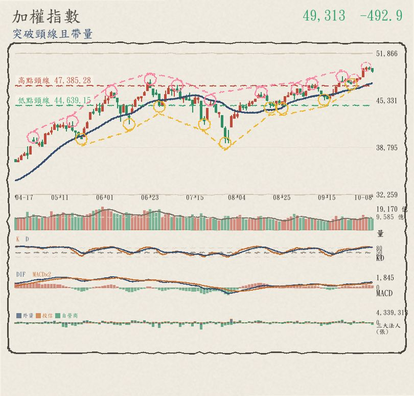
圖說：加權指數日 K（與個股圖相同標記）：黃圈＝轉折低點、粉圈＝轉折高點、虛線小圈＝還沒確認的轉折、藍線＝月線 MA20、水平虛線＝高點／低點頸線。最後一根是資料日當天。
本區塊為公開資料的技術面觀察，不構成投資建議，
不報牌、不預測、不下買賣決策。成交金額為集中市場總成交金額（含 ETF／權證），
與頁首摘要的「上市個股成交金額」口徑不同。標籤是統計，不是評分、也不是推薦。
上市 vs 上櫃（同期快篩）
加權 -0.99% vs 櫃買 -0.87%（同向） → 同向
（兩個市場分開寫，不合併成一個數字；櫃買為 TPEX 公開資料）
櫃買歷史：TPEX 逐日回補 130 根；來源：櫃買中心 www/zh-tw/indexInfo/sectinx（逐日，官方；OpenAPI tpex_index 只回當月）
（TPEX OpenAPI 只回當月，故逐日回補；歷史不足就不算該條均線並標「資料不足」，不用錯數字）
近 20 個交易日大盤狀態回溯（最新在上）（點開看逐日主狀態／量比／量價象限）
用同一支程式回算最近 20 個交易日（主狀態 S1~S8 與量比 20 皆為當日收盤當時的判定，
不是事後調整）；量比 20 未公布的日子寫「—」。
好條件最多的（前 10）
不好條件最多的（前 10）
好條件（8 項）：站上月線、月線向上、底底高、頭頭高、突破頸線、相對大盤強、攻擊量（量增＋上漲）、守住今日高檔（距今日高點 1% 內）。
不好條件（8 項）：跌破前低、今日下跌、相對大盤弱、在月線之下、量增下跌（出貨）、貼近今日低點（1% 內）、跌破昨日低點、月線下彎。
兩邊都是同一組日線資料＋盤中即時價算出來的「符合項目數」，只是把方向相反的條件分開數；
條件數不是評分或推薦，不構成投資建議。
逆勢上漲（加權下跌、個股上漲）（28 上市 19／上櫃 9）
盤中爆量（估量比 ≥ 1.5）（24 上市 16／上櫃 8）
今日疲弱（跌幅前 10）（10 上市 8／上櫃 2）
逐檔（70 檔，依盤中成交金額排序）
大立光 3008 上市
7325 +665.0（+9.98%）
高點墊高、底部不穩 盤中成交值 393.65 億・全榜第 1 名（上市第 1 名）・相對大盤 +10.04
好條件 5/8：站上月線、頭頭高、突破頸線、相對大盤強、攻擊量（量增＋上漲）
不好條件 1/8：月線下彎
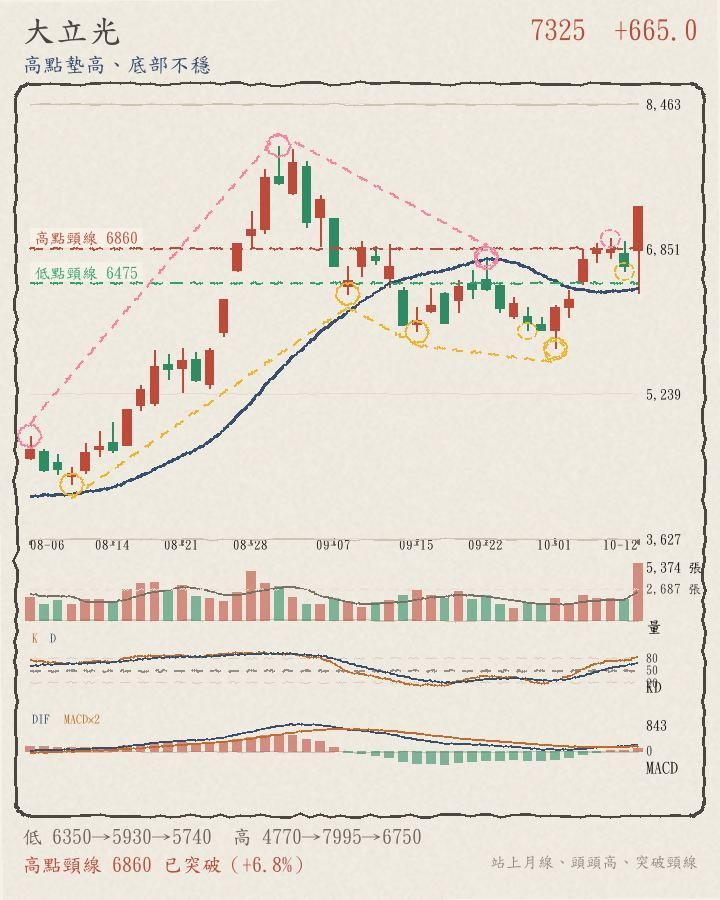
12:31 盤中 7325（+9.98%），比加權指數強 10.04 個百分點、站上月線 6388.25，已突破高點頸線 6860，高點還在墊高（但底部沒同步墊高）。
- 月線位置：現價 7325 在月線 6388.25 之上（+14.7%）；5 日線 6676 也在月線之上（短均在上）；月線向下
- 量能：以已過交易時間推估，今天成交量約是 20 日均量的 3.60 倍（爆量），比 20 日均量大不少；上漲又量增，量價配合
- 關鍵價位：高點頸線 6860 已站上；前一交易日高點 6930（高於 5.7%）；今天盤中高點 7325（高於 0.0%）；今天盤中低點 6355（高於 15.3%）
- 轉折結構：高點 4770、7995、6750 墊高（頭頭高），但低點 6350、5930、5740 沒有同步墊高；還沒確認的轉折低點 10-01 5740、10-08 6600；還沒確認的轉折高點 09-22 6750、10-07 6970（圖上虛線小圈）
台積電 2330 上市
2545 -5.0（-0.20%）
高點墊高、底部不穩 盤中成交值 371.42 億・全榜第 2 名（上市第 2 名）・相對大盤 -0.14
好條件 4/8：站上月線、月線向上、頭頭高、突破頸線
不好條件 3/8：今日下跌、相對大盤弱、跌破昨日低點
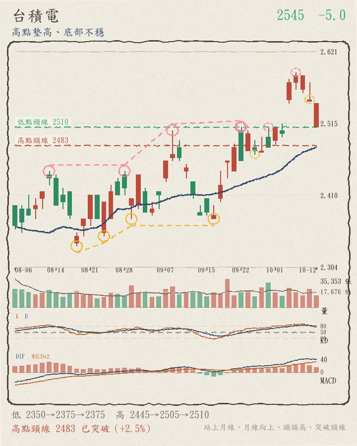
12:31 盤中 2545（-0.20%），比加權指數弱 0.14 個百分點、站上月線 2476.5，已突破高點頸線 2483，高點還在墊高（但底部沒同步墊高）。
- 月線位置：現價 2545 在月線 2476.5 之上（+2.8%）；5 日線 2559 也在月線之上（短均在上）；月線向上
- 量能：以已過交易時間推估，今天成交量約是 20 日均量的 0.95 倍（量平），跟 20 日均量差不多
- 關鍵價位：高點頸線 2483 已站上；前一交易日高點 2575（低於 1.2%）；今天盤中高點 2545（高於 0.0%）；今天盤中低點 2510（高於 1.4%）
- 轉折結構：高點 2445、2505、2510 墊高（頭頭高），但低點 2350、2375、2375 沒有同步墊高；還沒確認的轉折低點 09-24 2470、10-08 2550；還沒確認的轉折高點 09-30 2510、10-06 2590（圖上虛線小圈）
聯發科 2454 上市
4630 -60.0（-1.28%）
底部墊高、未過前高 盤中成交值 238.07 億・全榜第 3 名（上市第 3 名）・相對大盤 -1.22
好條件 3/8：月線向上、底底高、守住今日高檔（距今日高點 1% 內）
不好條件 5/8：跌破前低、今日下跌、相對大盤弱、在月線之下、跌破昨日低點
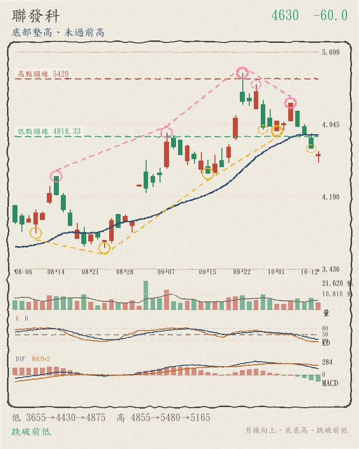
12:31 盤中 4630（-1.28%），比加權指數弱 1.22 個百分點、跌破月線 4834.5，離高點頸線 5420 還差 14.6%，底部還在墊高（但高點沒同步創高）。
- 月線位置：現價 4630 在月線 4834.5 之下（-4.2%）；5 日線 4912 也在月線之上（短均在上）；月線向上
- 量能：以已過交易時間推估，今天成交量約是 20 日均量的 0.96 倍（量平），跟 20 日均量差不多
- 關鍵價位：已跌破前一個轉折低點；高點頸線 5420 還在現價上方 14.6%；前一交易日高點 4850（低於 4.5%）；今天盤中高點 4660（低於 0.6%）；今天盤中低點 4545（高於 1.9%）
- 轉折結構：低點 3655、4430、4875 墊高（底底高），但高點 4855、5480、5165 沒有同步創高；還沒確認的轉折低點 10-01 4875、10-08 4690；還沒確認的轉折高點 09-24 5360、10-05 5165（圖上虛線小圈）
南亞 1303 上市
303 -7.0（-2.26%）
高點墊高、底部不穩 盤中成交值 168.39 億・全榜第 4 名（上市第 4 名）・相對大盤 -2.20
好條件 4/8：站上月線、月線向上、頭頭高、突破頸線
不好條件 4/8：今日下跌、相對大盤弱、貼近今日低點（1% 內）、跌破昨日低點
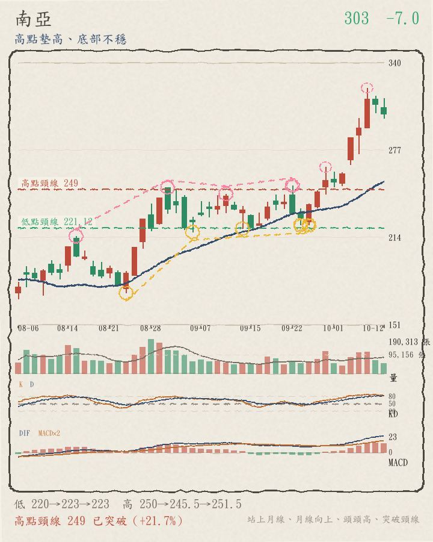
12:31 盤中 303（-2.26%），比加權指數弱 2.20 個百分點、站上月線 251.225，已突破高點頸線 249，高點還在墊高（但底部沒同步墊高）。
- 月線位置：現價 303 在月線 251.225 之上（+20.6%）；5 日線 292.6 也在月線之上（短均在上）；月線向上
- 量能：以已過交易時間推估，今天成交量約是 20 日均量的 1.00 倍（量平），跟 20 日均量差不多
- 關鍵價位：高點頸線 249 已站上；前一交易日高點 316（低於 4.1%）；今天盤中高點 314.5（低於 3.7%）；今天盤中低點 300（高於 1.0%）
- 轉折結構：高點 250、245.5、251.5 墊高（頭頭高），但低點 220.5、223、223 沒有同步墊高；還沒確認的轉折低點 09-23 223、09-24 223；還沒確認的轉折高點 09-30 265、10-07 322（圖上虛線小圈）
台達電 2308 上市
1880 -85.0（-4.33%）
高點墊高、底部不穩 盤中成交值 158.92 億・全榜第 5 名（上市第 5 名）・相對大盤 -4.27
好條件 3/8：站上月線、月線向上、頭頭高
不好條件 3/8：今日下跌、相對大盤弱、跌破昨日低點
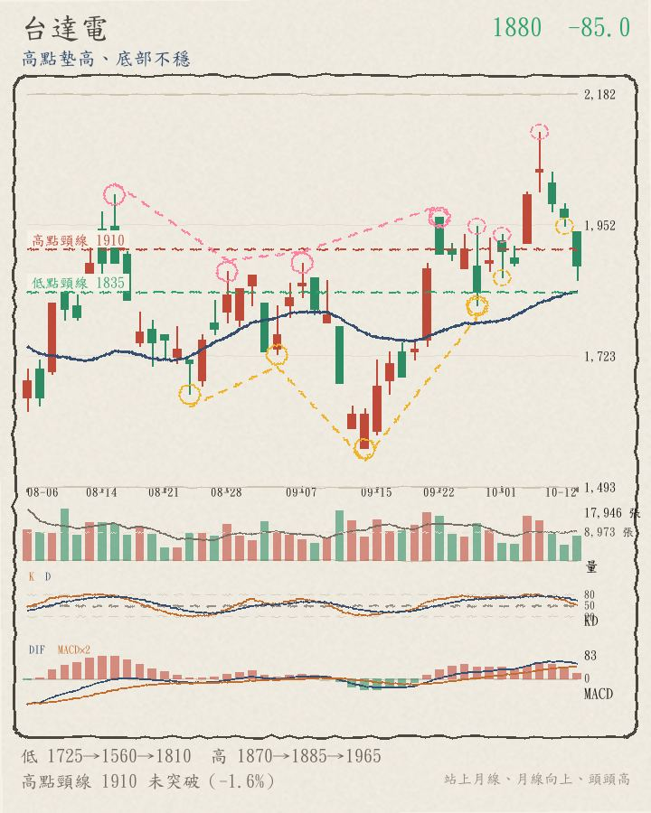
12:31 盤中 1880（-4.33%），比加權指數弱 4.27 個百分點、站上月線 1831，離高點頸線 1910 還差 1.6%，高點還在墊高（但底部沒同步墊高）。
- 月線位置：現價 1880 在月線 1831 之上（+2.7%）；5 日線 1979 也在月線之上（短均在上）；月線向上
- 量能：以已過交易時間推估，今天成交量約是 20 日均量的 0.98 倍（量平），跟 20 日均量差不多
- 關鍵價位：高點頸線 1910 還沒突破，差 1.6%；前一交易日高點 1990（低於 5.5%）；今天盤中高點 1940（低於 3.1%）；今天盤中低點 1855（高於 1.3%）
- 轉折結構：高點 1870、1885、1965 墊高（頭頭高），但低點 1725、1560、1810 沒有同步墊高；還沒確認的轉折低點 10-01 1860、10-08 1950；還沒確認的轉折高點 10-01 1935、10-06 2115（圖上虛線小圈）
國巨* 2327 上市
638 +3.0（+0.47%）
高點墊高、底部不穩 盤中成交值 135 億・全榜第 6 名（上市第 6 名）・相對大盤 +0.53
好條件 5/8：站上月線、月線向上、頭頭高、相對大盤強、守住今日高檔（距今日高點 1% 內）
不好條件 0/8：無
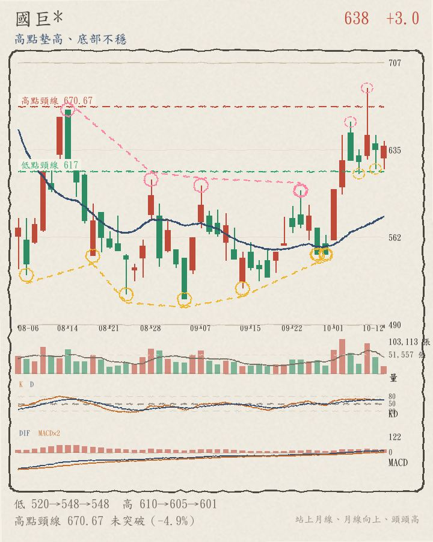
12:31 盤中 638（+0.47%），比加權指數強 0.53 個百分點、站上月線 575.8，離高點頸線 670.67 還差 4.9%，高點還在墊高（但底部沒同步墊高）。
- 月線位置：現價 638 在月線 575.8 之上（+10.8%）；5 日線 631.8 也在月線之上（短均在上）；月線向上
- 量能：以已過交易時間推估，今天成交量約是 20 日均量的 0.67 倍（量縮），比 20 日均量少很多；上漲但量縮，量價背離
- 關鍵價位：高點頸線 670.67 還沒突破，差 4.9%；前一交易日高點 647（低於 1.4%）；今天盤中高點 642（低於 0.6%）；今天盤中低點 619（高於 3.1%）
- 轉折結構：高點 610、605、601 墊高（頭頭高），但低點 520、548、548 沒有同步墊高；還沒確認的轉折低點 10-06 615、10-08 619；還沒確認的轉折高點 10-05 658、10-07 686（圖上虛線小圈）
台塑 1301 上市
80.5 -0.8（-0.98%）
高點墊高、底部不穩 盤中成交值 121.03 億・全榜第 7 名（上市第 7 名）・相對大盤 -0.92
好條件 4/8：站上月線、月線向上、頭頭高、突破頸線
不好條件 3/8：今日下跌、相對大盤弱、量增下跌（出貨）
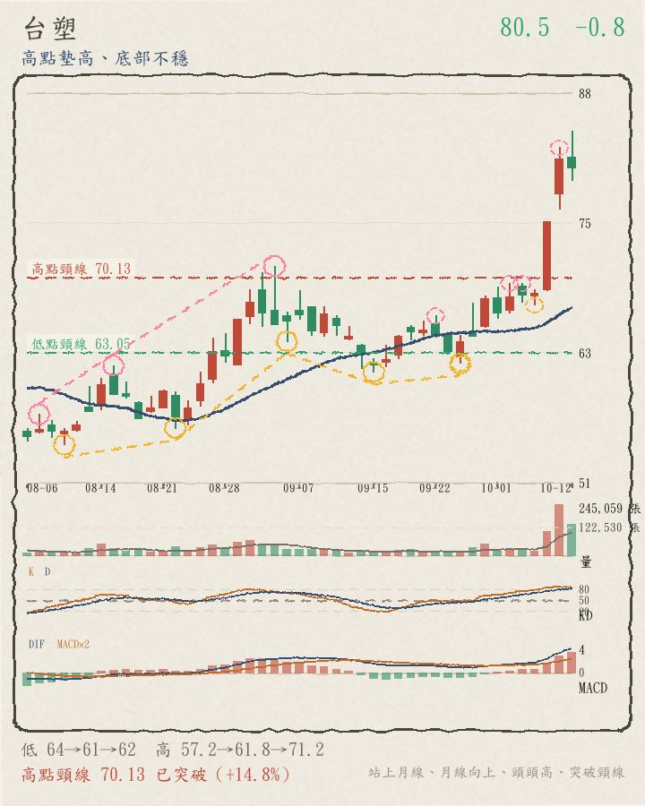
12:31 盤中 80.5（-0.98%），比加權指數弱 0.92 個百分點、站上月線 66.62，已突破高點頸線 70.13，高點還在墊高（但底部沒同步墊高）。
- 月線位置：現價 80.5 在月線 66.62 之上（+20.8%）；5 日線 72.42 也在月線之上（短均在上）；月線向上
- 量能：以已過交易時間推估，今天成交量約是 20 日均量的 6.74 倍（爆量），比 20 日均量大不少；下跌卻量增，量價背離
- 關鍵價位：高點頸線 70.13 已站上；前一交易日高點 82.4（低於 2.3%）；今天盤中高點 84（低於 4.2%）；今天盤中低點 79.3（高於 1.5%）
- 轉折結構：高點 57.2、61.8、71.2 墊高（頭頭高），但低點 64.1、61.2、62 沒有同步墊高；還沒確認的轉折低點 09-24 62、10-06 67.5；還沒確認的轉折高點 10-05 69.6、10-08 82.4（圖上虛線小圈）
世芯-KY 3661 上市
4385 +40.0（+0.92%）
高點墊高、底部不穩 盤中成交值 112.78 億・全榜第 8 名（上市第 8 名）・相對大盤 +0.98
好條件 4/8：站上月線、頭頭高、相對大盤強、攻擊量（量增＋上漲）
不好條件 1/8：月線下彎
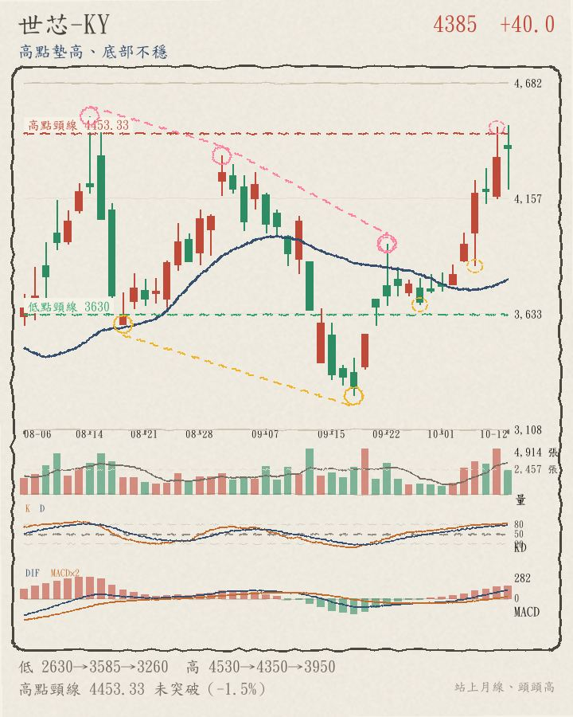
12:31 盤中 4385（+0.92%），比加權指數強 0.98 個百分點、站上月線 3765.5，離高點頸線 4453.33 還差 1.5%，高點還在墊高（但底部沒同步墊高）。
- 月線位置：現價 4385 在月線 3765.5 之上（+16.4%）；5 日線 4095 也在月線之上（短均在上）；月線向下
- 量能：以已過交易時間推估，今天成交量約是 20 日均量的 1.42 倍（量增），比 20 日均量大不少；上漲又量增，量價配合
- 關鍵價位：高點頸線 4453.33 還沒突破，差 1.5%；前一交易日高點 4480（低於 2.1%）；今天盤中高點 4490（低於 2.3%）；今天盤中低點 4200（高於 4.4%）
- 轉折結構：高點 4530、4350、3950 墊高（頭頭高），但低點 2630、3585、3260 沒有同步墊高；還沒確認的轉折低點 09-29 3675、10-06 3850；還沒確認的轉折高點 09-22 3950、10-08 4480（圖上虛線小圈）
創意 3443 上市
8025 -335.0（-4.01%）
上升趨勢（底底高＋頭頭高） 盤中成交值 112.51 億・全榜第 9 名（上市第 9 名）・相對大盤 -3.95
好條件 4/8：站上月線、月線向上、底底高、頭頭高
不好條件 3/8：今日下跌、相對大盤弱、跌破昨日低點
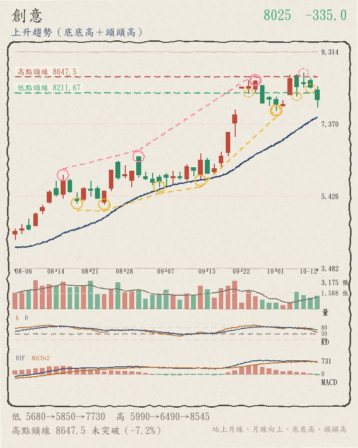
12:31 盤中 8025（-4.01%），比加權指數弱 3.95 個百分點、站上月線 7449.25，離高點頸線 8647.5 還差 7.2%，轉折結構仍是底底高＋頭頭高。
- 月線位置：現價 8025 在月線 7449.25 之上（+7.7%）；5 日線 8339 也在月線之上（短均在上）；月線向上
- 量能：以已過交易時間推估，今天成交量約是 20 日均量的 1.19 倍（量增），比 20 日均量大不少；下跌卻量增，量價背離
- 關鍵價位：高點頸線 8647.5 還沒突破，差 7.2%；前一交易日高點 8600（低於 6.7%）；今天盤中高點 8385（低於 4.3%）；今天盤中低點 7820（高於 2.6%）
- 轉折結構：低點 5680、5850、7730 一路墊高、高點 5990、6490、8545 也一路墊高，是底底高＋頭頭高；還沒確認的轉折低點 10-06 8110、10-08 8325；還沒確認的轉折高點 09-24 8545、10-07 8750（圖上虛線小圈）
聯電 2303 上市
147 -0.5（-0.34%）
底部墊高、未過前高 盤中成交值 111.29 億・全榜第 10 名（上市第 10 名）・相對大盤 -0.28
好條件 2/8：月線向上、底底高
不好條件 4/8：跌破前低、今日下跌、相對大盤弱、在月線之下
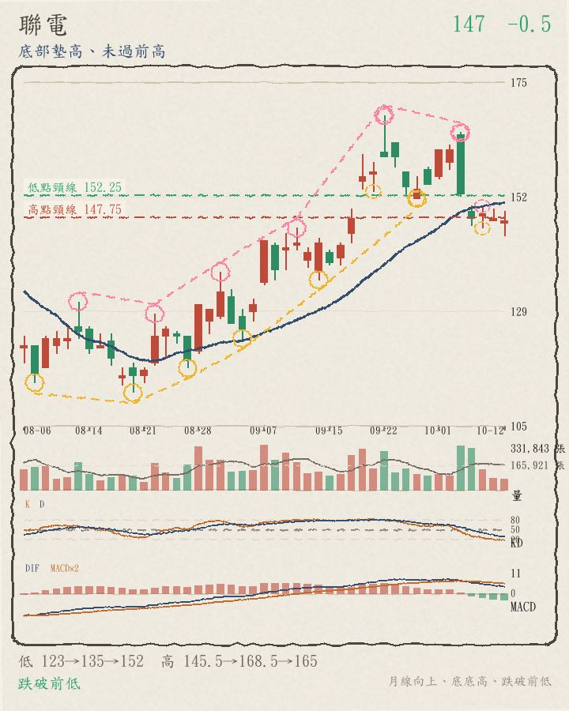
12:31 盤中 147（-0.34%），比加權指數弱 0.28 個百分點、跌破月線 150.45，離高點頸線 147.75 還差 0.5%，底部還在墊高（但高點沒同步創高）。
- 月線位置：現價 147 在月線 150.45 之下（-2.3%）；5 日線 151.5 也在月線之上（短均在上）；月線向上
- 量能：以已過交易時間推估，今天成交量約是 20 日均量的 0.53 倍（量縮），比 20 日均量少很多
- 關鍵價位：已跌破前一個轉折低點；高點頸線 147.75 還在現價上方 0.5%；前一交易日高點 149.5（低於 1.7%）；今天盤中高點 149（低於 1.3%）；今天盤中低點 144（高於 2.1%）
- 轉折結構：低點 123、135、151.5 墊高（底底高），但高點 145.5、168.5、165 沒有同步創高；還沒確認的轉折低點 09-29 151.5、10-07 145.5；還沒確認的轉折高點 10-05 165、10-07 150（圖上虛線小圈）
南亞科 2408 上市
526 -6.0（-1.13%）
高點墊高、底部不穩 盤中成交值 104.33 億・全榜第 11 名（上市第 11 名）・相對大盤 -1.07
好條件 3/8：站上月線、月線向上、頭頭高
不好條件 2/8：今日下跌、相對大盤弱
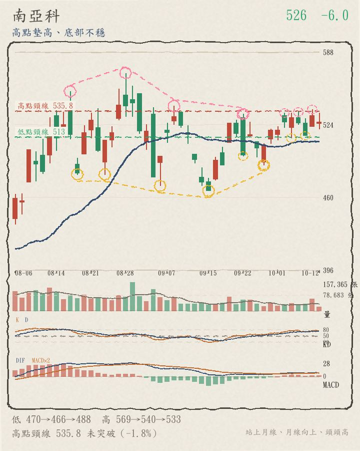
12:31 盤中 526（-1.13%），比加權指數弱 1.07 個百分點、站上月線 508.85，離高點頸線 535.8 還差 1.8%，高點還在墊高（但底部沒同步墊高）。
- 月線位置：現價 526 在月線 508.85 之上（+3.4%）；5 日線 525.4 也在月線之上（短均在上）；月線向上
- 量能：以已過交易時間推估，今天成交量約是 20 日均量的 0.60 倍（量縮），比 20 日均量少很多
- 關鍵價位：高點頸線 535.8 還沒突破，差 1.8%；前一交易日高點 537（低於 2.0%）；今天盤中高點 534（低於 1.5%）；今天盤中低點 520（高於 1.2%）
- 轉折結構：高點 569、540、533 墊高（頭頭高），但低點 470、465.5、488 沒有同步墊高；還沒確認的轉折低點 10-05 512、10-07 514；還沒確認的轉折高點 10-06 535、10-08 537（圖上虛線小圈）
華通 2313 上市
254 +6.0（+2.42%）
上升趨勢（底底高＋頭頭高） 盤中成交值 103.16 億・全榜第 12 名（上市第 12 名）・相對大盤 +2.48
好條件 6/8：站上月線、月線向上、底底高、頭頭高、相對大盤強、攻擊量（量增＋上漲）
不好條件 0/8：無
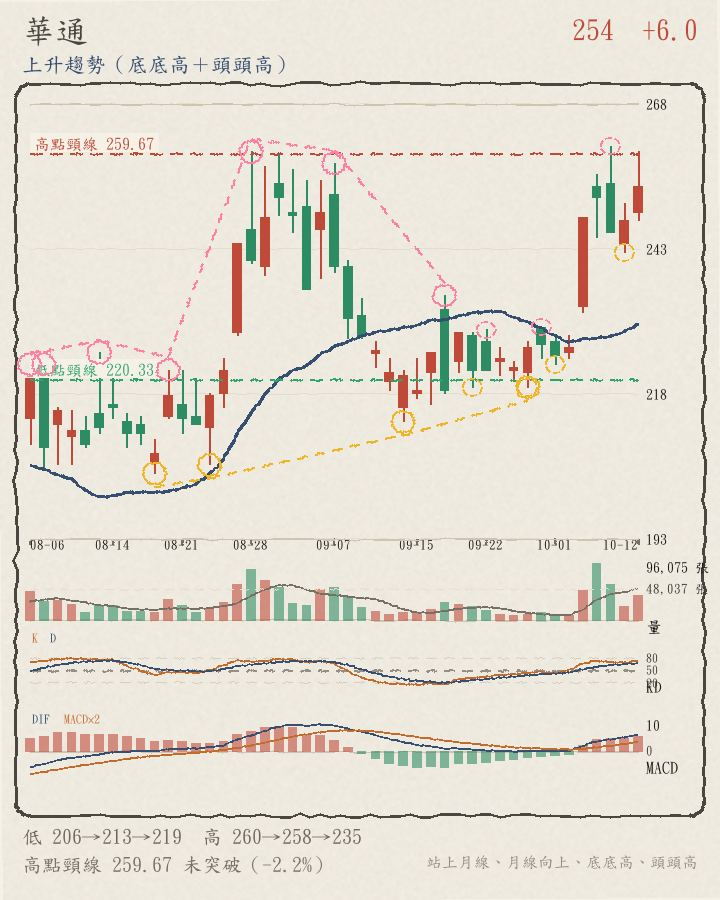
12:31 盤中 254（+2.42%），比加權指數強 2.48 個百分點、站上月線 228.725，離高點頸線 259.67 還差 2.2%，轉折結構仍是底底高＋頭頭高。
- 月線位置：現價 254 在月線 228.725 之上（+11.1%）；5 日線 244.1 也在月線之上（短均在上）；月線向上
- 量能：以已過交易時間推估，今天成交量約是 20 日均量的 2.17 倍（爆量），比 20 日均量大不少；上漲又量增，量價配合
- 關鍵價位：高點頸線 259.67 還沒突破，差 2.2%；前一交易日高點 251（高於 1.2%）；今天盤中高點 260（低於 2.3%）；今天盤中低點 248（高於 2.4%）
- 轉折結構：低點 205.5、213、219 一路墊高、高點 260、258、235 也一路墊高，是底底高＋頭頭高；還沒確認的轉折低點 10-01 223、10-08 242.5；還沒確認的轉折高點 09-30 229.5、10-07 261（圖上虛線小圈）
鴻海 2317 上市
244.5 -4.5（-1.81%）
上升趨勢（底底高＋頭頭高） 盤中成交值 97.22 億・全榜第 13 名（上市第 13 名）・相對大盤 -1.75
好條件 3/8：底底高、頭頭高、守住今日高檔（距今日高點 1% 內）
不好條件 7/8：跌破前低、今日下跌、相對大盤弱、在月線之下、量增下跌（出貨）、貼近今日低點（1% 內）、跌破昨日低點
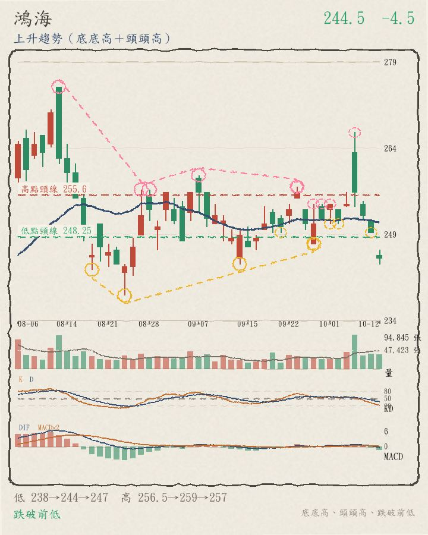
12:31 盤中 244.5（-1.81%），比加權指數弱 1.75 個百分點、跌破月線 251.125，離高點頸線 255.6 還差 4.3%，轉折結構仍是底底高＋頭頭高。
- 月線位置：現價 244.5 在月線 251.125 之下（-2.6%）；5 日線 252.4 也在月線之上（短均在上）；月線走平
- 量能：以已過交易時間推估，今天成交量約是 20 日均量的 1.55 倍（爆量），比 20 日均量大不少；下跌卻量增，量價背離
- 關鍵價位：已跌破前一個轉折低點；高點頸線 255.6 還在現價上方 4.3%；前一交易日高點 251（低於 2.6%）；今天盤中高點 246（低於 0.6%）；今天盤中低點 243.5（高於 0.4%）
- 轉折結構：低點 238、243.5、247 一路墊高、高點 256.5、259、257 也一路墊高，是底底高＋頭頭高；還沒確認的轉折低點 10-02 250.5、10-08 249；還沒確認的轉折高點 10-01 254、10-06 266.5（圖上虛線小圈）
金像電 2368 上市
1230 -55.0（-4.28%）
高點墊高、底部不穩 盤中成交值 95.36 億・全榜第 14 名（上市第 14 名）・相對大盤 -4.22
好條件 4/8：站上月線、月線向上、頭頭高、突破頸線
不好條件 2/8：今日下跌、相對大盤弱
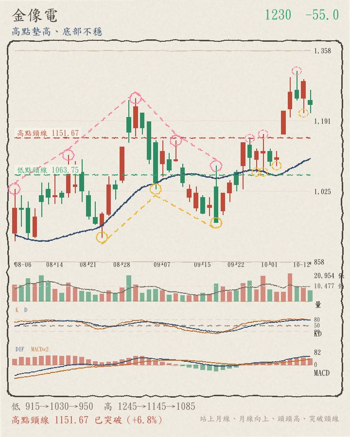
12:31 盤中 1230（-4.28%），比加權指數弱 4.22 個百分點、站上月線 1095.2，已突破高點頸線 1151.67，高點還在墊高（但底部沒同步墊高）。
- 月線位置：現價 1230 在月線 1095.2 之上（+12.3%）；5 日線 1222 也在月線之上（短均在上）；月線向上
- 量能：以已過交易時間推估，今天成交量約是 20 日均量的 1.08 倍（量平），比 20 日均量大一些
- 關鍵價位：高點頸線 1151.67 已站上；前一交易日高點 1290（低於 4.7%）；今天盤中高點 1265（低於 2.8%）；今天盤中低點 1210（高於 1.7%）
- 轉折結構：高點 1245、1145、1085 墊高（頭頭高），但低點 915、1030、950 沒有同步墊高；還沒確認的轉折低點 10-02 1085、10-08 1210；還沒確認的轉折高點 09-30 1160、10-07 1310（圖上虛線小圈）
長榮 2603 上市
255.5 +23.0（+9.89%）
底部墊高、未過前高 盤中成交值 94.61 億・全榜第 15 名（上市第 15 名）・相對大盤 +9.95
好條件 6/8：站上月線、月線向上、底底高、突破頸線、相對大盤強、攻擊量（量增＋上漲）
不好條件 0/8：無
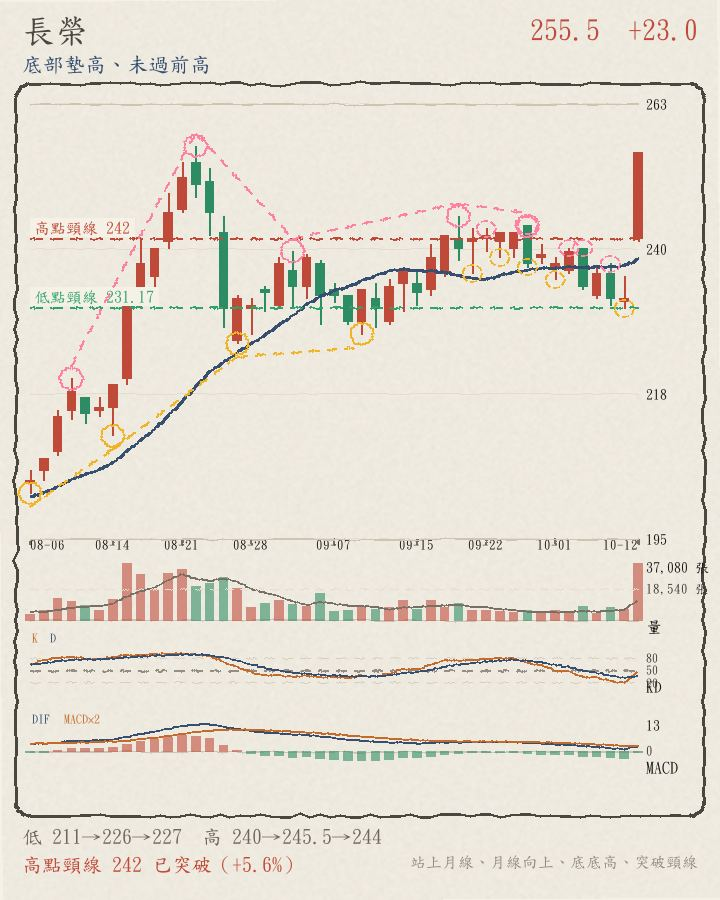
12:31 盤中 255.5（+9.89%），比加權指數強 9.95 個百分點、站上月線 237.7，已突破高點頸線 242，底部還在墊高（但高點沒同步創高）。
- 月線位置：現價 255.5 在月線 237.7 之上（+7.5%）；5 日線 235.2 也在月線之下（短均在下）；月線向上
- 量能：以已過交易時間推估，今天成交量約是 20 日均量的 6.45 倍（爆量），比 20 日均量大不少；上漲又量增，量價配合
- 關鍵價位：高點頸線 242 已站上；前一交易日高點 236（高於 8.3%）；今天盤中高點 255.5（高於 0.0%）；今天盤中低點 241.5（高於 5.8%）
- 轉折結構：低點 211、225.5、227 墊高（底底高），但高點 240、245.5、244 沒有同步創高；還沒確認的轉折低點 10-01 235.5、10-08 231；還沒確認的轉折高點 10-05 240.5、10-07 238（圖上虛線小圈）
台光電 2383 上市
6015 +15.0（+0.25%）
高點墊高、底部不穩 盤中成交值 92.15 億・全榜第 16 名（上市第 16 名）・相對大盤 +0.31
好條件 5/8：站上月線、月線向上、頭頭高、相對大盤強、守住今日高檔（距今日高點 1% 內）
不好條件 0/8：無
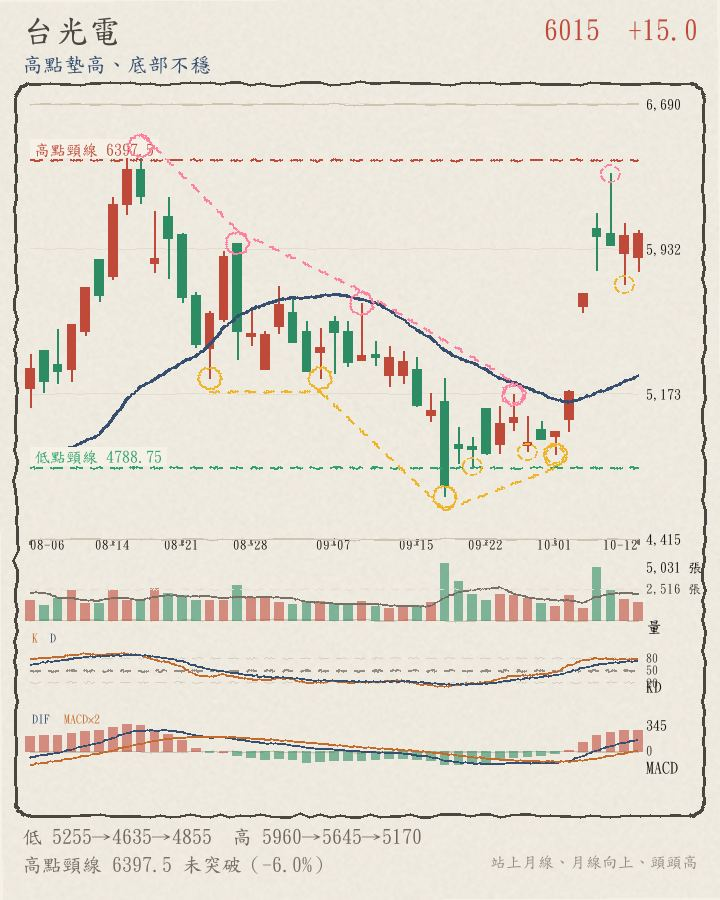
12:31 盤中 6015（+0.25%），比加權指數強 0.31 個百分點、站上月線 5236.5，離高點頸線 6397.5 還差 6.0%，高點還在墊高（但底部沒同步墊高）。
- 月線位置：現價 6015 在月線 5236.5 之上（+14.9%）；5 日線 5766 也在月線之上（短均在上）；月線向上
- 量能：以已過交易時間推估，今天成交量約是 20 日均量的 0.96 倍（量平），跟 20 日均量差不多
- 關鍵價位：高點頸線 6397.5 還沒突破，差 6.0%；前一交易日高點 6065（低於 0.8%）；今天盤中高點 6030（低於 0.2%）；今天盤中低點 5815（高於 3.4%）
- 轉折結構：高點 5960、5645、5170 墊高（頭頭高），但低點 5255、4635、4855 沒有同步墊高；還沒確認的轉折低點 10-01 4855、10-08 5745；還沒確認的轉折高點 09-24 5170、10-07 6325（圖上虛線小圈）
日月光投控 3711 上市
758 +14.0（+1.88%）
上升趨勢（底底高＋頭頭高） 盤中成交值 91.2 億・全榜第 17 名（上市第 17 名）・相對大盤 +1.94
好條件 7/8：站上月線、月線向上、底底高、頭頭高、突破頸線、相對大盤強、守住今日高檔（距今日高點 1% 內）
不好條件 0/8：無
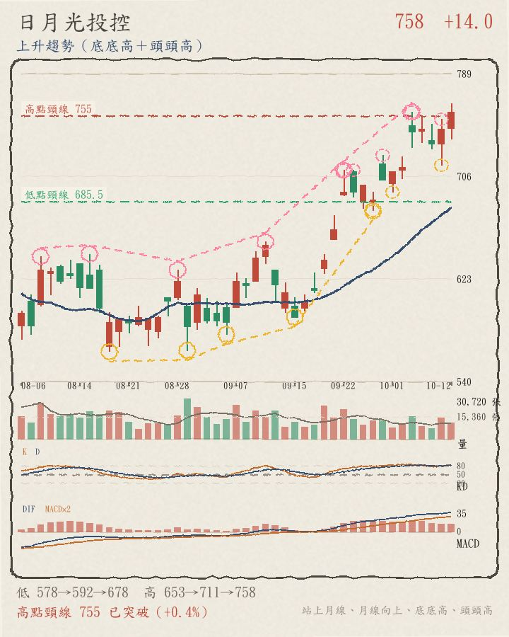
12:31 盤中 758（+1.88%），比加權指數強 1.94 個百分點、站上月線 674.6，已突破高點頸線 755，轉折結構仍是底底高＋頭頭高。
- 月線位置：現價 758 在月線 674.6 之上（+12.4%）；5 日線 735 也在月線之上（短均在上）；月線向上
- 量能：以已過交易時間推估，今天成交量約是 20 日均量的 1.09 倍（量平），比 20 日均量大一些
- 關鍵價位：高點頸線 755 已站上；前一交易日高點 752（高於 0.8%）；今天盤中高點 765（低於 0.9%）；今天盤中低點 736（高於 3.0%）
- 轉折結構：低點 578、592、678 一路墊高、高點 653、711、758 也一路墊高，是底底高＋頭頭高；還沒確認的轉折低點 10-01 693、10-08 715；還沒確認的轉折高點 10-05 758、10-08 752（圖上虛線小圈）
臻鼎-KY 4958 上市
583 -9.0（-1.52%）
上升趨勢（底底高＋頭頭高） 盤中成交值 90.06 億・全榜第 18 名（上市第 18 名）・相對大盤 -1.46
好條件 4/8：站上月線、月線向上、底底高、頭頭高
不好條件 4/8：今日下跌、相對大盤弱、貼近今日低點（1% 內）、跌破昨日低點
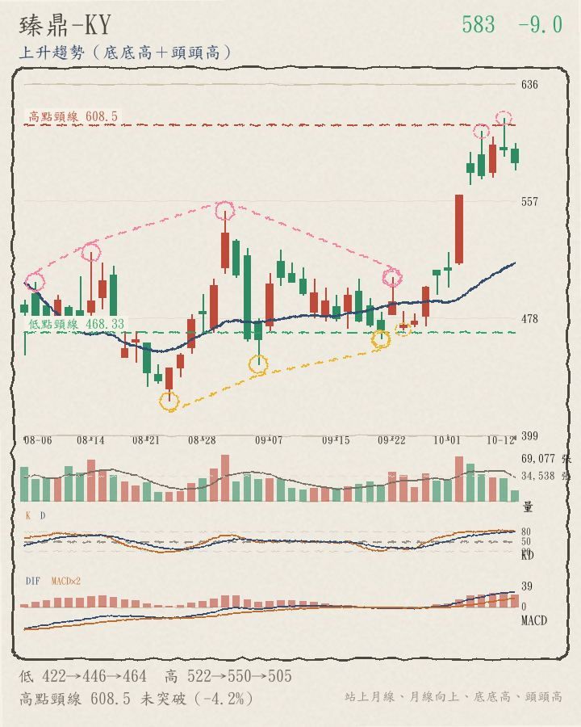
12:31 盤中 583（-1.52%），比加權指數弱 1.46 個百分點、站上月線 511.1，離高點頸線 608.5 還差 4.2%，轉折結構仍是底底高＋頭頭高。
- 月線位置：現價 583 在月線 511.1 之上（+14.1%）；5 日線 579.6 也在月線之上（短均在上）；月線向上
- 量能：以已過交易時間推估，今天成交量約是 20 日均量的 0.64 倍（量縮），比 20 日均量少很多
- 關鍵價位：高點頸線 608.5 還沒突破，差 4.2%；前一交易日高點 613（低於 4.9%）；今天盤中高點 596（低於 2.2%）；今天盤中低點 578（高於 0.9%）
- 轉折結構：低點 421.5、446.5、463.5 一路墊高、高點 522、550、505 也一路墊高，是底底高＋頭頭高；還沒確認的轉折低點 09-21 463.5、09-23 470；還沒確認的轉折高點 10-06 604、10-08 613（圖上虛線小圈）
友達 2409 上市
35.6 -1.0（-2.73%）
高點墊高、底部不穩 盤中成交值 89.3 億・全榜第 19 名（上市第 19 名）・相對大盤 -2.67
好條件 4/8：站上月線、月線向上、頭頭高、守住今日高檔（距今日高點 1% 內）
不好條件 3/8：今日下跌、相對大盤弱、跌破昨日低點
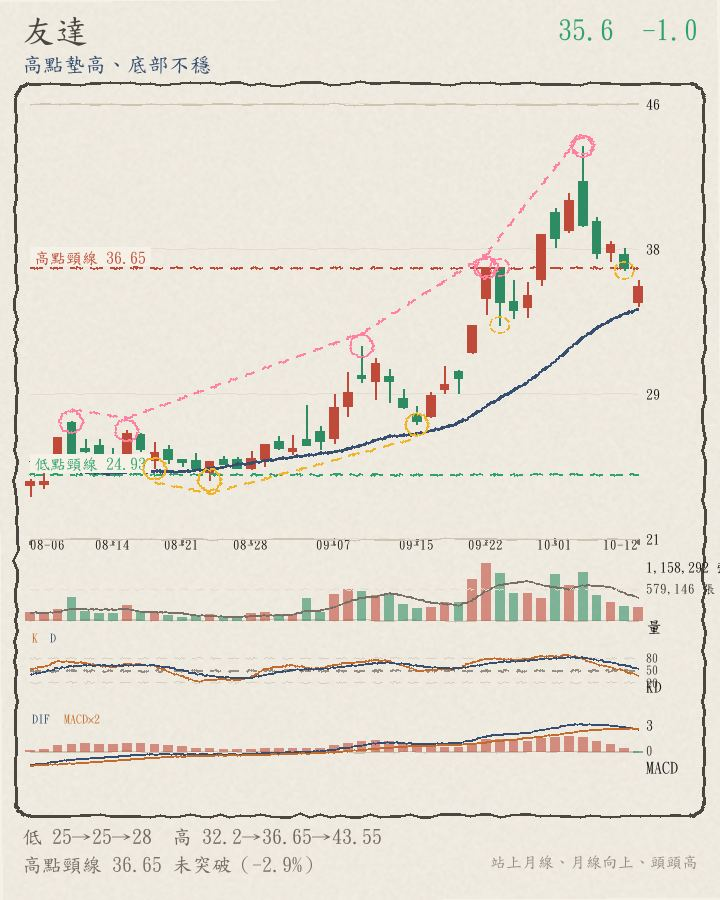
12:31 盤中 35.6（-2.73%），比加權指數弱 2.67 個百分點、站上月線 34.028，離高點頸線 36.65 還差 2.9%，高點還在墊高（但底部沒同步墊高）。
- 月線位置：現價 35.6 在月線 34.028 之上（+4.6%）；5 日線 38.3 也在月線之上（短均在上）；月線向上
- 量能：以已過交易時間推估，今天成交量約是 20 日均量的 0.55 倍（量縮），比 20 日均量少很多
- 關鍵價位：高點頸線 36.65 還沒突破，差 2.9%；前一交易日高點 37.75（低於 5.7%）；今天盤中高點 35.95（低於 1.0%）；今天盤中低點 34.45（高於 3.3%）
- 轉折結構：高點 32.2、36.65、43.55 墊高（頭頭高），但低點 25.25、24.6、27.75 沒有同步墊高；還沒確認的轉折低點 09-23 33.4、10-08 36.5；還沒確認的轉折高點 09-23 36.65、10-05 43.55（圖上虛線小圈）
環球晶 6488 上櫃
1120 -10.0（-0.88%）
高點墊高、底部不穩 盤中成交值 85.48 億・全榜第 20 名（上櫃第 1 名）・相對大盤 -0.82
好條件 4/8：站上月線、月線向上、頭頭高、突破頸線
不好條件 2/8：今日下跌、相對大盤弱
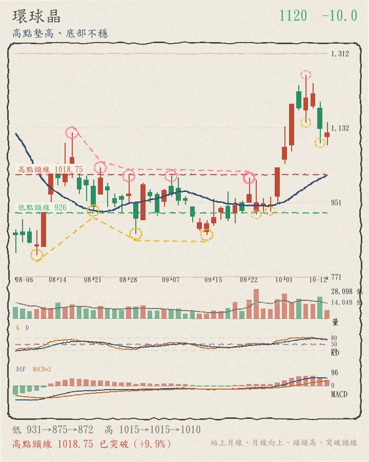
12:31 盤中 1120（-0.88%），比加權指數弱 0.82 個百分點、站上月線 1008.3，已突破高點頸線 1018.75，高點還在墊高（但底部沒同步墊高）。
- 月線位置：現價 1120 在月線 1008.3 之上（+11.1%）；5 日線 1184 也在月線之上（短均在上）；月線向上
- 量能：以已過交易時間推估，今天成交量約是 20 日均量的 0.81 倍（量平），比 20 日均量少很多
- 關鍵價位：高點頸線 1018.75 已站上；前一交易日高點 1195（低於 6.3%）；今天盤中高點 1145（低於 2.2%）；今天盤中低點 1090（高於 2.8%）
- 轉折結構：高點 1015、1015、1010 墊高（頭頭高），但低點 931、875、872 沒有同步墊高；還沒確認的轉折低點 10-06 1145、10-08 1095；還沒確認的轉折高點 09-22 1010、10-06 1260（圖上虛線小圈）
穩懋 3105 上櫃
578 -3.0（-0.52%）
區間或轉弱 盤中成交值 82.86 億・全榜第 21 名（上櫃第 2 名）・相對大盤 -0.46
好條件 3/8：站上月線、月線向上、突破頸線
不好條件 3/8：今日下跌、相對大盤弱、貼近今日低點（1% 內）
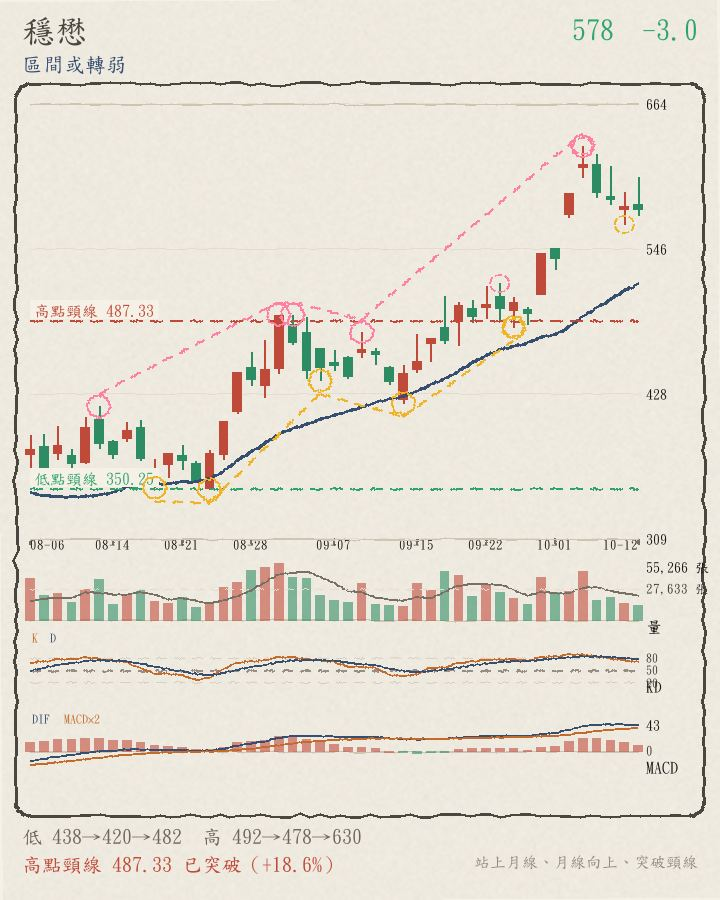
12:31 盤中 578（-0.52%），比加權指數弱 0.46 個百分點、站上月線 511.75，已突破高點頸線 487.33，轉折還沒走出明顯方向。
- 月線位置：現價 578 在月線 511.75 之上（+12.9%）；5 日線 593.4 也在月線之上（短均在上）；月線向上
- 量能：以已過交易時間推估，今天成交量約是 20 日均量的 0.66 倍（量縮），比 20 日均量少很多
- 關鍵價位：高點頸線 487.33 已站上；前一交易日高點 592（低於 2.4%）；今天盤中高點 604（低於 4.3%）；今天盤中低點 573（高於 0.9%）
- 轉折結構：低點 438.5、420、482 與高點 492、478、630 都沒有明顯遞增，屬於區間震盪或轉弱；還沒確認的轉折低點 09-24 482、10-08 566；還沒確認的轉折高點 09-23 518、10-05 630（圖上虛線小圈）
鴻勁 7769 上市
6470 +545.0（+9.20%）
區間或轉弱 盤中成交值 80.94 億・全榜第 22 名（上市第 20 名）・相對大盤 +9.26
好條件 5/8：站上月線、突破頸線、相對大盤強、攻擊量（量增＋上漲）、守住今日高檔（距今日高點 1% 內）
不好條件 1/8：月線下彎

12:31 盤中 6470（+9.20%），比加權指數強 9.26 個百分點、站上月線 6011.75，已突破高點頸線 6082.5，轉折還沒走出明顯方向。
- 月線位置：現價 6470 在月線 6011.75 之上（+7.6%）；5 日線 5822 也在月線之下（短均在下）；月線向下
- 量能：以已過交易時間推估，今天成交量約是 20 日均量的 1.82 倍（爆量），比 20 日均量大不少；上漲又量增，量價配合
- 關鍵價位：高點頸線 6082.5 已站上；前一交易日高點 6050（高於 6.9%）；今天盤中高點 6515（低於 0.7%）；今天盤中低點 5870（高於 10.2%）
- 轉折結構：低點 6060、5620、5380 與高點 6540、7160、6615 都沒有明顯遞增，屬於區間震盪或轉弱；還沒確認的轉折低點 09-21 5920、09-30 5380；還沒確認的轉折高點 10-06 6115、10-08 6050（圖上虛線小圈）
欣銓 3264 上櫃
273.5 +17.5（+6.84%）
高點墊高、底部不穩 盤中成交值 79.14 億・全榜第 23 名（上櫃第 3 名）・相對大盤 +6.90
好條件 7/8：站上月線、月線向上、頭頭高、突破頸線、相對大盤強、攻擊量（量增＋上漲）、守住今日高檔（距今日高點 1% 內）
不好條件 0/8：無

12:31 盤中 273.5（+6.84%），比加權指數強 6.90 個百分點、站上月線 245.775，已突破高點頸線 254，高點還在墊高（但底部沒同步墊高）。
- 月線位置：現價 273.5 在月線 245.775 之上（+11.3%）；5 日線 247.7 也在月線之上（短均在上）；月線向上
- 量能：以已過交易時間推估，今天成交量約是 20 日均量的 2.45 倍（爆量），比 20 日均量大不少；上漲又量增，量價配合
- 關鍵價位：高點頸線 254 已站上；前一交易日高點 256.5（高於 6.6%）；今天盤中高點 275（低於 0.5%）；今天盤中低點 251（高於 9.0%）
- 轉折結構：高點 239.5、251.5、289.5 墊高（頭頭高），但低點 220、238、238 沒有同步墊高；還沒確認的轉折低點 10-05 239.5、10-08 243；還沒確認的轉折高點 10-05 249、10-08 256.5（圖上虛線小圈）
欣興 3037 上市
1245 -25.0（-1.97%）
高點墊高、底部不穩 盤中成交值 78.73 億・全榜第 24 名（上市第 21 名）・相對大盤 -1.91
好條件 4/8：站上月線、月線向上、頭頭高、突破頸線
不好條件 4/8：今日下跌、相對大盤弱、貼近今日低點（1% 內）、跌破昨日低點
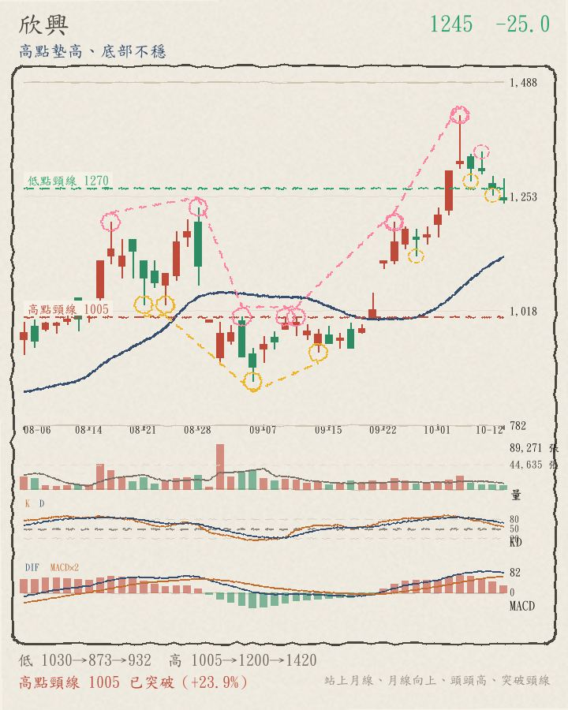
12:31 盤中 1245（-1.97%），比加權指數弱 1.91 個百分點、站上月線 1116.1，已突破高點頸線 1005，高點還在墊高（但底部沒同步墊高）。
- 月線位置：現價 1245 在月線 1116.1 之上（+11.6%）；5 日線 1303 也在月線之上（短均在上）；月線向上
- 量能：以已過交易時間推估，今天成交量約是 20 日均量的 0.55 倍（量縮），比 20 日均量少很多
- 關鍵價位：高點頸線 1005 已站上；前一交易日高點 1295（低於 3.9%）；今天盤中高點 1290（低於 3.5%）；今天盤中低點 1240（高於 0.4%）
- 轉折結構：高點 1005、1200、1420 墊高（頭頭高），但低點 1030、873、932 沒有同步墊高；還沒確認的轉折低點 10-06 1285、10-08 1255；還沒確認的轉折高點 10-05 1420、10-07 1345（圖上虛線小圈）
川湖 2059 上市
10450 -165.0（-1.55%）
高點墊高、底部不穩 盤中成交值 73.15 億・全榜第 25 名（上市第 22 名）・相對大盤 -1.49
好條件 1/8：頭頭高
不好條件 7/8：跌破前低、今日下跌、相對大盤弱、在月線之下、量增下跌（出貨）、跌破昨日低點、月線下彎
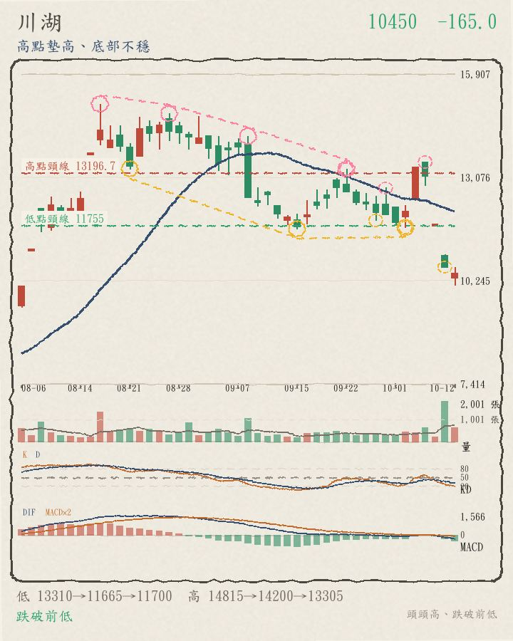
12:31 盤中 10450（-1.55%），比加權指數弱 1.49 個百分點、跌破月線 12242，離高點頸線 13196.7 還差 20.8%，高點還在墊高（但底部沒同步墊高）。
- 月線位置：現價 10450 在月線 12242 之下（-14.6%）；5 日線 12201 也在月線之下（短均在下）；月線向下
- 量能：以已過交易時間推估，今天成交量約是 20 日均量的 2.14 倍（爆量），比 20 日均量大不少；下跌卻量增，量價背離
- 關鍵價位：已跌破前一個轉折低點；高點頸線 13196.7 還在現價上方 20.8%；前一交易日高點 10965（低於 4.7%）；今天盤中高點 10615（低於 1.6%）；今天盤中低點 10120（高於 3.3%）
- 轉折結構：高點 14815、14200、13305 墊高（頭頭高），但低點 13310、11665、11700 沒有同步墊高；還沒確認的轉折低點 10-02 11700、10-08 10615；還沒確認的轉折高點 09-30 12785、10-06 13500（圖上虛線小圈）
頎邦 6147 上櫃
231 +5.0（+2.21%）
上升趨勢（底底高＋頭頭高） 盤中成交值 72.01 億・全榜第 26 名（上櫃第 4 名）・相對大盤 +2.27
好條件 5/8：站上月線、月線向上、底底高、頭頭高、相對大盤強
不好條件 0/8：無
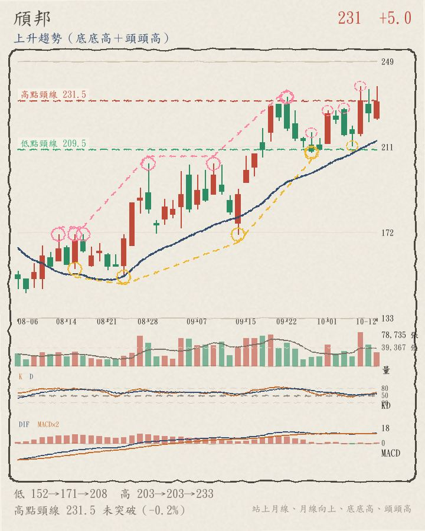
12:31 盤中 231（+2.21%），比加權指數強 2.27 個百分點、站上月線 211.6，離高點頸線 231.5 還差 0.2%，轉折結構仍是底底高＋頭頭高。
- 月線位置：現價 231 在月線 211.6 之上（+9.2%）；5 日線 222.6 也在月線之上（短均在上）；月線向上
- 量能：以已過交易時間推估，今天成交量約是 20 日均量的 0.89 倍（量平），比 20 日均量少一些
- 關鍵價位：高點頸線 231.5 還沒突破，差 0.2%；前一交易日高點 236.5（低於 2.3%）；今天盤中高點 238（低於 2.9%）；今天盤中低點 223（高於 3.6%）
- 轉折結構：低點 152、171、208 一路墊高、高點 203、203、233 也一路墊高，是底底高＋頭頭高；還沒確認的轉折低點 09-29 208、10-06 211；還沒確認的轉折高點 10-05 228、10-07 238（圖上虛線小圈）
京元電子 2449 上市
299.5 -5.0（-1.64%）
高點墊高、底部不穩 盤中成交值 71.67 億・全榜第 27 名（上市第 23 名）・相對大盤 -1.58
好條件 3/8：站上月線、月線向上、頭頭高
不好條件 3/8：今日下跌、相對大盤弱、量增下跌（出貨）
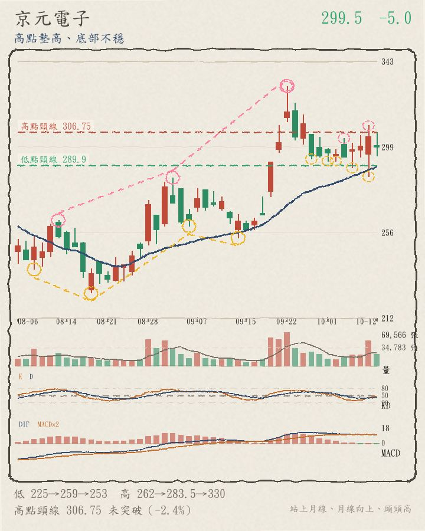
12:31 盤中 299.5（-1.64%），比加權指數弱 1.58 個百分點、站上月線 287.55，離高點頸線 306.75 還差 2.4%，高點還在墊高（但底部沒同步墊高）。
- 月線位置：現價 299.5 在月線 287.55 之上（+4.2%）；5 日線 298.3 也在月線之上（短均在上）；月線向上
- 量能：以已過交易時間推估，今天成交量約是 20 日均量的 1.26 倍（量增），比 20 日均量大不少；下跌卻量增，量價背離
- 關鍵價位：高點頸線 306.75 還沒突破，差 2.4%；前一交易日高點 310（低於 3.4%）；今天盤中高點 306.5（低於 2.3%）；今天盤中低點 294.5（高於 1.7%）
- 轉折結構：高點 262、283.5、330 墊高（頭頭高），但低點 225、259、253 沒有同步墊高；還沒確認的轉折低點 10-06 288.5、10-08 284；還沒確認的轉折高點 10-05 303.5、10-08 310（圖上虛線小圈）
玉晶光 3406 上市
1090 +30.0（+2.83%）
高點墊高、底部不穩 盤中成交值 70.27 億・全榜第 28 名（上市第 24 名）・相對大盤 +2.89
好條件 5/8：站上月線、月線向上、頭頭高、相對大盤強、攻擊量（量增＋上漲）
不好條件 0/8：無
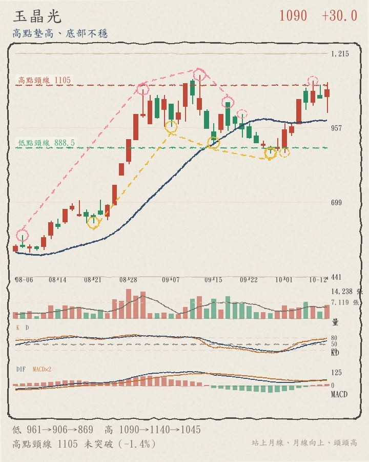
12:31 盤中 1090（+2.83%），比加權指數強 2.89 個百分點、站上月線 983，離高點頸線 1105 還差 1.4%，高點還在墊高（但底部沒同步墊高）。
- 月線位置：現價 1090 在月線 983 之上（+10.9%）；5 日線 1041.2 也在月線之上（短均在上）；月線向上
- 量能：以已過交易時間推估，今天成交量約是 20 日均量的 1.39 倍（量增），比 20 日均量大不少；上漲又量增，量價配合
- 關鍵價位：高點頸線 1105 還沒突破，差 1.4%；前一交易日高點 1105（低於 1.4%）；今天盤中高點 1115（低於 2.2%）；今天盤中低點 1010（高於 7.9%）
- 轉折結構：高點 1090、1140、1045 墊高（頭頭高），但低點 961、906、869 沒有同步墊高；還沒確認的轉折低點 09-29 869、10-01 871；還沒確認的轉折高點 09-21 1005、10-07 1120（圖上虛線小圈）
華新科 2492 上市
416.5 -3.5（-0.83%）
上升趨勢（底底高＋頭頭高） 盤中成交值 69.23 億・全榜第 29 名（上市第 25 名）・相對大盤 -0.77
好條件 5/8：站上月線、月線向上、底底高、頭頭高、突破頸線
不好條件 2/8：今日下跌、相對大盤弱
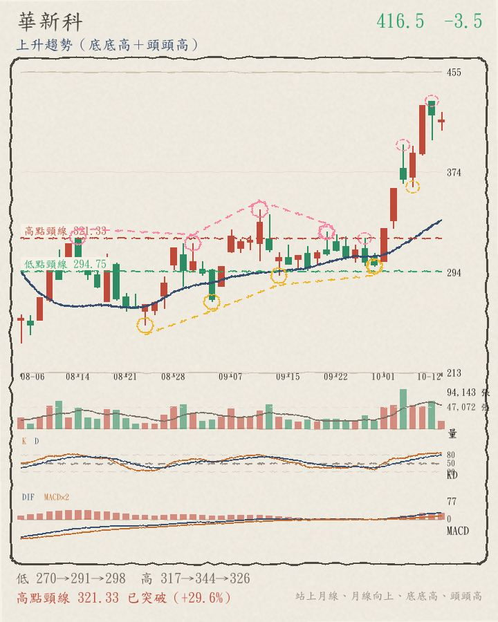
12:31 盤中 416.5（-0.83%），比加權指數弱 0.77 個百分點、站上月線 330.975，已突破高點頸線 321.33，轉折結構仍是底底高＋頭頭高。
- 月線位置：現價 416.5 在月線 330.975 之上（+25.8%）；5 日線 393.5 也在月線之上（短均在上）；月線向上
- 量能：以已過交易時間推估，今天成交量約是 20 日均量的 0.62 倍（量縮），比 20 日均量少很多
- 關鍵價位：高點頸線 321.33 已站上；前一交易日高點 431.5（低於 3.5%）；今天盤中高點 422.5（低於 1.4%）；今天盤中低點 408（高於 2.1%）
- 轉折結構：低點 270、291、298.5 一路墊高、高點 317、344、326 也一路墊高，是底底高＋頭頭高；還沒確認的轉折低點 09-30 298.5、10-06 362.5；還沒確認的轉折高點 10-05 396、10-08 431.5（圖上虛線小圈）
萬潤 6187 上櫃
1675 +150.0（+9.84%）
高點墊高、底部不穩 盤中成交值 68.88 億・全榜第 30 名（上櫃第 5 名）・相對大盤 +9.90
好條件 6/8：站上月線、月線向上、頭頭高、突破頸線、相對大盤強、攻擊量（量增＋上漲）
不好條件 0/8：無
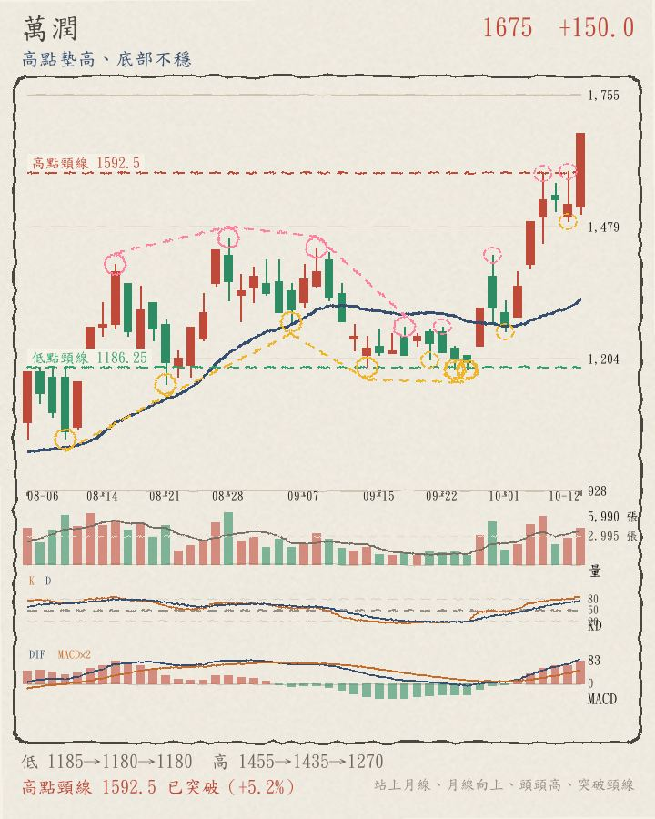
12:31 盤中 1675（+9.84%），比加權指數強 9.90 個百分點、站上月線 1308.25，已突破高點頸線 1592.5，高點還在墊高（但底部沒同步墊高）。
- 月線位置：現價 1675 在月線 1308.25 之上（+28.0%）；5 日線 1488 也在月線之上（短均在上）；月線向上
- 量能：以已過交易時間推估，今天成交量約是 20 日均量的 2.30 倍（爆量），比 20 日均量大不少；上漲又量增，量價配合
- 關鍵價位：高點頸線 1592.5 已站上；前一交易日高點 1595（高於 5.0%）；今天盤中高點 1675（高於 0.0%）；今天盤中低點 1505（高於 11.3%）
- 轉折結構：高點 1455、1435、1270 墊高（頭頭高），但低點 1185、1180、1180 沒有同步墊高；還沒確認的轉折低點 10-01 1260、10-08 1490；還沒確認的轉折高點 10-06 1590、10-08 1595（圖上虛線小圈）
智邦 2345 上市
2115 +45.0（+2.17%）
高點墊高、底部不穩 盤中成交值 67.64 億・全榜第 31 名（上市第 26 名）・相對大盤 +2.23
好條件 4/8：站上月線、頭頭高、相對大盤強、守住今日高檔（距今日高點 1% 內）
不好條件 1/8：月線下彎
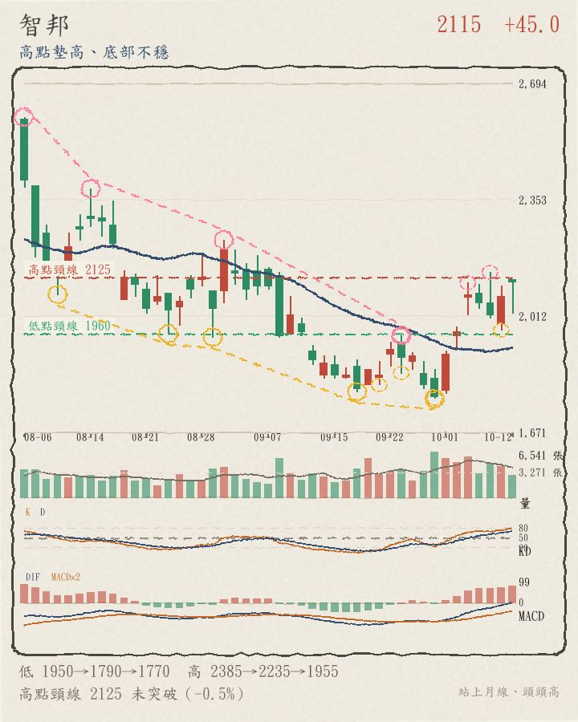
12:31 盤中 2115（+2.17%），比加權指數強 2.23 個百分點、站上月線 1913.75，離高點頸線 2125 還差 0.5%，高點還在墊高（但底部沒同步墊高）。
- 月線位置：現價 2115 在月線 1913.75 之上（+10.5%）；5 日線 2035 也在月線之上（短均在上）；月線向下
- 量能：以已過交易時間推估，今天成交量約是 20 日均量的 1.02 倍（量平），跟 20 日均量差不多
- 關鍵價位：高點頸線 2125 還沒突破，差 0.5%；前一交易日高點 2100（高於 0.7%）；今天盤中高點 2120（低於 0.2%）；今天盤中低點 2020（高於 4.7%）
- 轉折結構：高點 2385、2235、1955 墊高（頭頭高），但低點 1950、1790、1770 沒有同步墊高；還沒確認的轉折低點 09-30 1770、10-08 1970；還沒確認的轉折高點 10-05 2110、10-07 2140（圖上虛線小圈）
華邦電 2344 上市
173 -4.0（-2.26%）
底部墊高、未過前高 盤中成交值 62.28 億・全榜第 32 名（上市第 27 名）・相對大盤 -2.20
好條件 2/8：月線向上、底底高
不好條件 6/8：跌破前低、今日下跌、相對大盤弱、在月線之下、貼近今日低點（1% 內）、跌破昨日低點
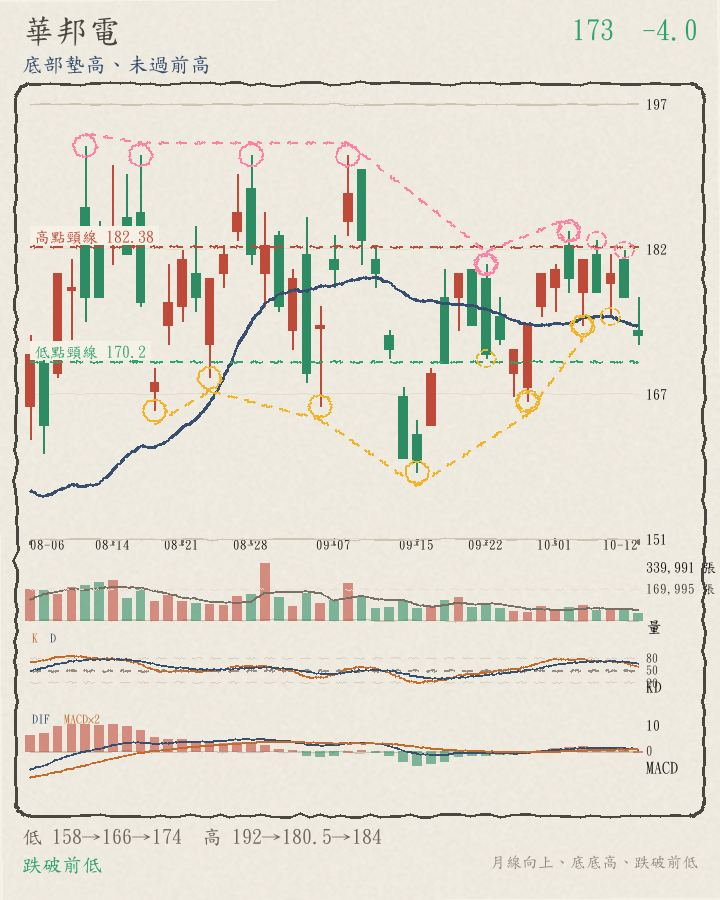
12:31 盤中 173（-2.26%），比加權指數弱 2.20 個百分點、跌破月線 174.425，離高點頸線 182.38 還差 5.1%，底部還在墊高（但高點沒同步創高）。
- 月線位置：現價 173 在月線 174.425 之下（-0.8%）；5 日線 178.8 也在月線之上（短均在上）；月線向上
- 量能：以已過交易時間推估，今天成交量約是 20 日均量的 0.51 倍（量縮），比 20 日均量少很多
- 關鍵價位：已跌破前一個轉折低點；高點頸線 182.38 還在現價上方 5.1%；前一交易日高點 182（低於 4.9%）；今天盤中高點 177（低於 2.3%）；今天盤中低點 172（高於 0.6%）
- 轉折結構：低點 158.5、166、174 墊高（底底高），但高點 192、180.5、184 沒有同步創高；還沒確認的轉折低點 10-05 174、10-07 175；還沒確認的轉折高點 10-06 183、10-08 182（圖上虛線小圈）
光寶科 2301 上市
287.5 -10.0（-3.36%）
高點墊高、底部不穩 盤中成交值 61.15 億・全榜第 33 名（上市第 28 名）・相對大盤 -3.30
好條件 3/8：站上月線、頭頭高、守住今日高檔（距今日高點 1% 內）
不好條件 5/8：今日下跌、相對大盤弱、量增下跌（出貨）、跌破昨日低點、月線下彎
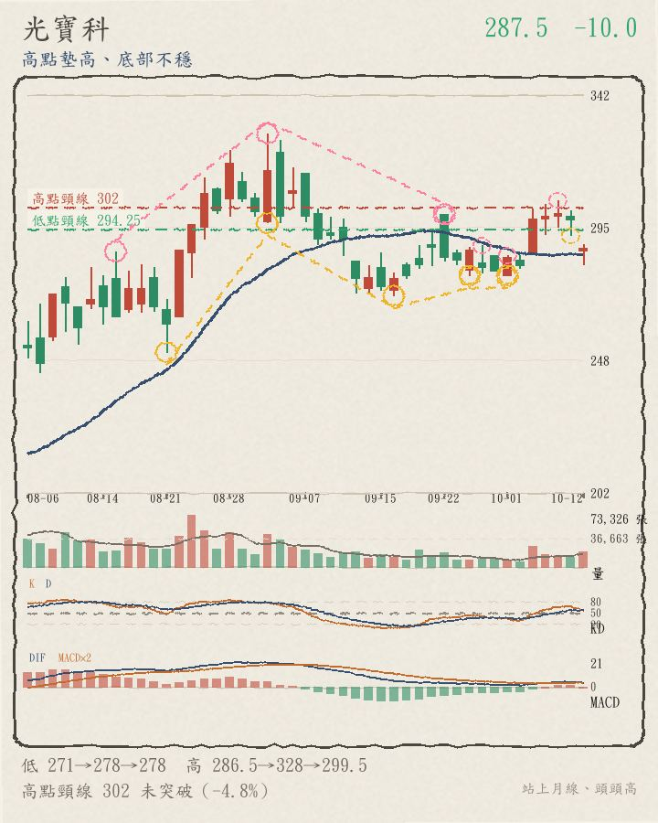
12:31 盤中 287.5（-3.36%），比加權指數弱 3.30 個百分點、站上月線 285.675，離高點頸線 302 還差 4.8%，高點還在墊高（但底部沒同步墊高）。
- 月線位置：現價 287.5 在月線 285.675 之上（+0.6%）；5 日線 295.2 也在月線之上（短均在上）；月線向下
- 量能：以已過交易時間推估，今天成交量約是 20 日均量的 1.77 倍（爆量），比 20 日均量大不少；下跌卻量增，量價背離
- 關鍵價位：高點頸線 302 還沒突破，差 4.8%；前一交易日高點 301（低於 4.5%）；今天盤中高點 289（低於 0.5%）；今天盤中低點 282（高於 2.0%）
- 轉折結構：高點 286.5、328、299.5 墊高（頭頭高），但低點 271、278、278 沒有同步墊高；還沒確認的轉折低點 10-01 278、10-08 292；還沒確認的轉折高點 10-01 285、10-07 304.5（圖上虛線小圈）
陽明 2609 上市
63.6 +3.9（+6.53%）
上升趨勢（底底高＋頭頭高） 盤中成交值 60.66 億・全榜第 34 名（上市第 29 名）・相對大盤 +6.59
好條件 7/8：站上月線、月線向上、底底高、頭頭高、突破頸線、相對大盤強、攻擊量（量增＋上漲）
不好條件 0/8：無
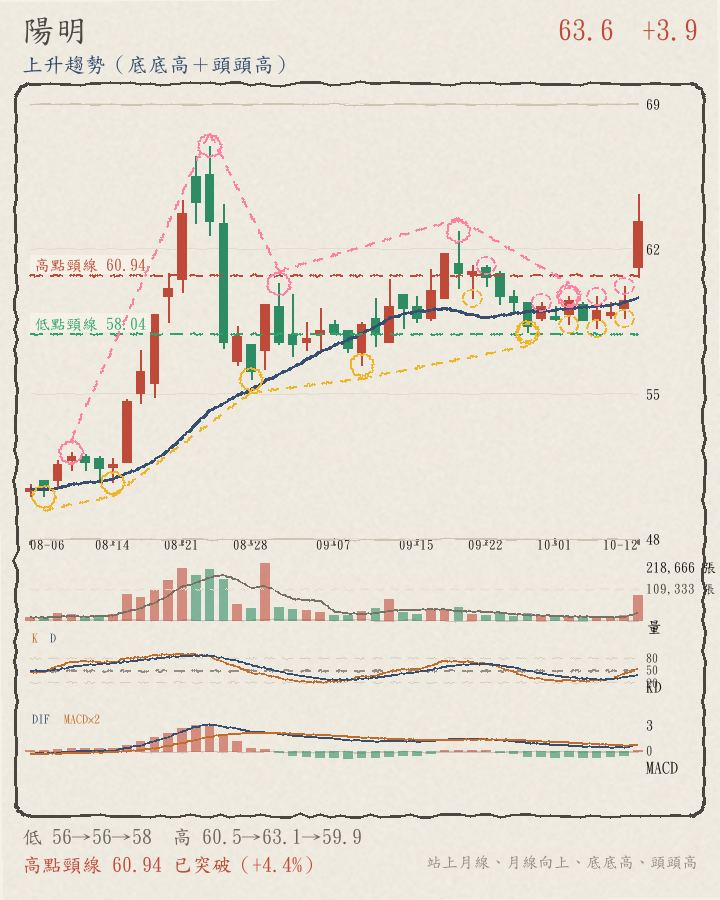
12:31 盤中 63.6（+6.53%），比加權指數強 6.59 個百分點、站上月線 59.58，已突破高點頸線 60.94，轉折結構仍是底底高＋頭頭高。
- 月線位置：現價 63.6 在月線 59.58 之上（+6.8%）；5 日線 59.28 也在月線之下（短均在下）；月線向上
- 量能：以已過交易時間推估，今天成交量約是 20 日均量的 4.63 倍（爆量），比 20 日均量大不少；上漲又量增，量價配合
- 關鍵價位：高點頸線 60.94 已站上；前一交易日高點 60.4（高於 5.3%）；今天盤中高點 64.9（低於 2.0%）；今天盤中低點 60.8（高於 4.6%）
- 轉折結構：低點 55.8、56.5、58.1 一路墊高、高點 60.5、63.1、59.9 也一路墊高，是底底高＋頭頭高；還沒確認的轉折低點 10-06 58.3、10-08 58.8；還沒確認的轉折高點 10-06 59.9、10-08 60.4（圖上虛線小圈）
南電 8046 上市
1425 -50.0（-3.39%）
上升趨勢（底底高＋頭頭高） 盤中成交值 60.58 億・全榜第 35 名（上市第 30 名）・相對大盤 -3.33
好條件 4/8：站上月線、月線向上、底底高、頭頭高
不好條件 3/8：今日下跌、相對大盤弱、跌破昨日低點
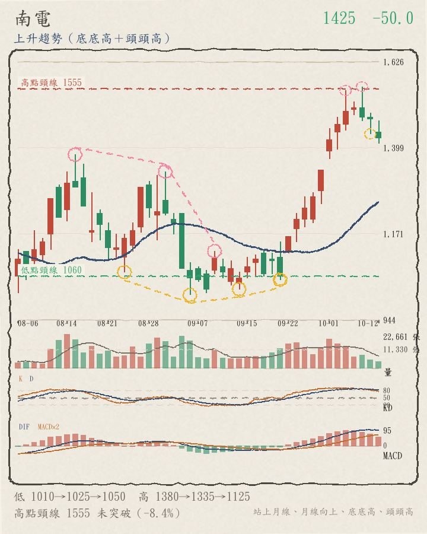
12:31 盤中 1425（-3.39%），比加權指數弱 3.33 個百分點、站上月線 1239.5，離高點頸線 1555 還差 8.4%，轉折結構仍是底底高＋頭頭高。
- 月線位置：現價 1425 在月線 1239.5 之上（+15.0%）；5 日線 1483 也在月線之上（短均在上）；月線向上
- 量能：以已過交易時間推估，今天成交量約是 20 日均量的 0.50 倍（量縮），比 20 日均量少很多
- 關鍵價位：高點頸線 1555 還沒突破，差 8.4%；前一交易日高點 1490（低於 4.4%）；今天盤中高點 1470（低於 3.1%）；今天盤中低點 1410（高於 1.1%）
- 轉折結構：低點 1010、1025、1050 一路墊高、高點 1380、1335、1125 也一路墊高，是底底高＋頭頭高；還沒確認的轉折低點 09-21 1050、10-08 1435；還沒確認的轉折高點 10-05 1550、10-07 1560（圖上虛線小圈）
旺矽 6223 上櫃
6130 +555.0（+9.96%）
區間或轉弱 盤中成交值 60.32 億・全榜第 36 名（上櫃第 6 名）・相對大盤 +10.02
好條件 5/8：站上月線、月線向上、突破頸線、相對大盤強、攻擊量（量增＋上漲）
不好條件 0/8：無
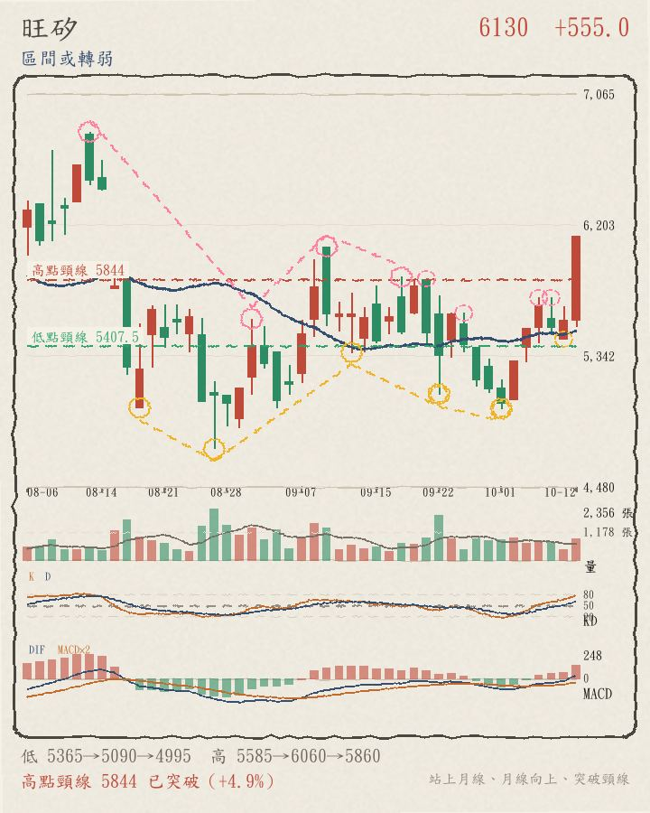
12:31 盤中 6130（+9.96%），比加權指數強 10.02 個百分點、站上月線 5480.5，已突破高點頸線 5844，轉折還沒走出明顯方向。
- 月線位置：現價 6130 在月線 5480.5 之上（+11.8%）；5 日線 5521 也在月線之上（短均在上）；月線向上
- 量能：以已過交易時間推估，今天成交量約是 20 日均量的 1.39 倍（量增），比 20 日均量大不少；上漲又量增，量價配合
- 關鍵價位：高點頸線 5844 已站上；前一交易日高點 5665（高於 8.2%）；今天盤中高點 6130（高於 0.0%）；今天盤中低點 5535（高於 10.7%）
- 轉折結構：低點 5365、5090、4995 與高點 5585、6060、5860 都沒有明顯遞增，屬於區間震盪或轉弱；還沒確認的轉折低點 10-01 4995、10-08 5450；還沒確認的轉折高點 10-06 5725、10-07 5725（圖上虛線小圈）
萬海 2615 上市
120 +8.5（+7.62%）
區間或轉弱 盤中成交值 58.69 億・全榜第 37 名（上市第 31 名）・相對大盤 +7.68
好條件 4/8：站上月線、突破頸線、相對大盤強、攻擊量（量增＋上漲）
不好條件 1/8：月線下彎
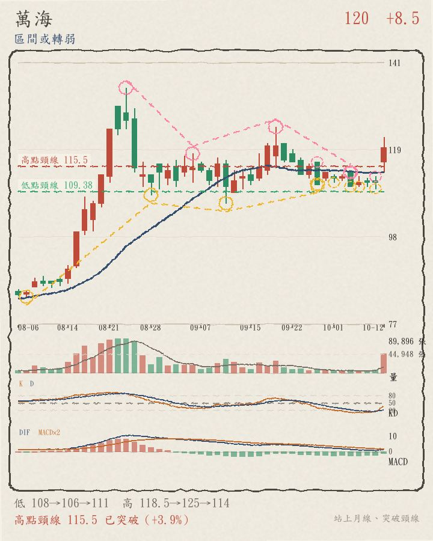
12:31 盤中 120（+7.62%），比加權指數強 7.68 個百分點、站上月線 113.875，已突破高點頸線 115.5，轉折還沒走出明顯方向。
- 月線位置：現價 120 在月線 113.875 之上（+5.4%）；5 日線 111.6 也在月線之下（短均在下）；月線向下
- 量能：以已過交易時間推估，今天成交量約是 20 日均量的 4.51 倍（爆量），比 20 日均量大不少；上漲又量增，量價配合
- 關鍵價位：高點頸線 115.5 已站上；前一交易日高點 113（高於 6.2%）；今天盤中高點 122.5（低於 2.0%）；今天盤中低點 114（高於 5.3%）
- 轉折結構：低點 108.5、106.5、111 與高點 118.5、125、114 都沒有明顯遞增，屬於區間震盪或轉弱；還沒確認的轉折低點 10-06 110.5、10-08 110；還沒確認的轉折高點 10-05 114、10-08 113（圖上虛線小圈）
光頡 3624 上櫃
167.5 -7.5（-4.29%）
上升趨勢（底底高＋頭頭高） 盤中成交值 55.45 億・全榜第 38 名（上櫃第 7 名）・相對大盤 -4.23
好條件 5/8：站上月線、月線向上、底底高、頭頭高、突破頸線
不好條件 4/8：今日下跌、相對大盤弱、量增下跌（出貨）、貼近今日低點（1% 內）
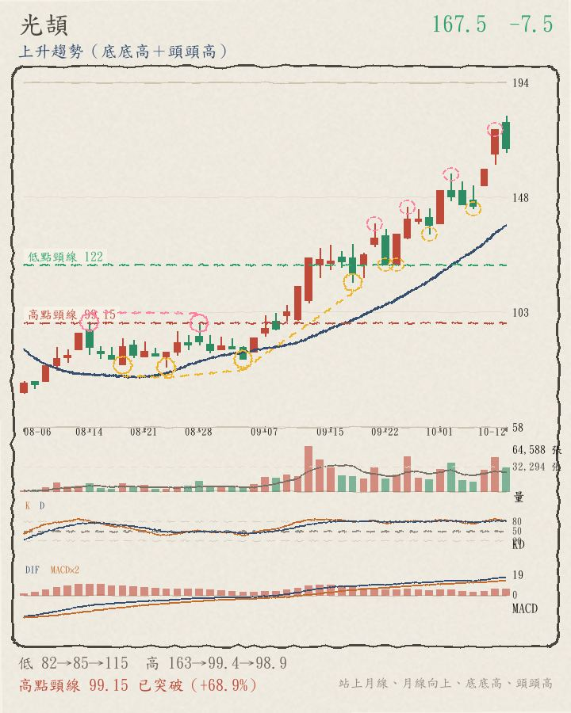
12:31 盤中 167.5（-4.29%），比加權指數弱 4.23 個百分點、站上月線 134.325，已突破高點頸線 99.15，轉折結構仍是底底高＋頭頭高。
- 月線位置：現價 167.5 在月線 134.325 之上（+24.7%）；5 日線 154.7 也在月線之上（短均在上）；月線向上
- 量能：以已過交易時間推估，今天成交量約是 20 日均量的 1.53 倍（爆量），比 20 日均量大不少；下跌卻量增，量價背離
- 關鍵價位：高點頸線 99.15 已站上；前一交易日高點 175（低於 4.3%）；今天盤中高點 180.5（低於 7.2%）；今天盤中低點 166（高於 0.9%）
- 轉折結構：低點 81.8、84.8、115 一路墊高、高點 163、99.4、98.9 也一路墊高，是底底高＋頭頭高；還沒確認的轉折低點 09-30 134、10-06 144；還沒確認的轉折高點 10-02 157.5、10-08 175（圖上虛線小圈）
奇鋐 3017 上市
3360 -80.0（-2.33%）
高點墊高、底部不穩 盤中成交值 53.46 億・全榜第 39 名（上市第 32 名）・相對大盤 -2.27
好條件 2/8：月線向上、頭頭高
不好條件 5/8：今日下跌、相對大盤弱、在月線之下、貼近今日低點（1% 內）、跌破昨日低點
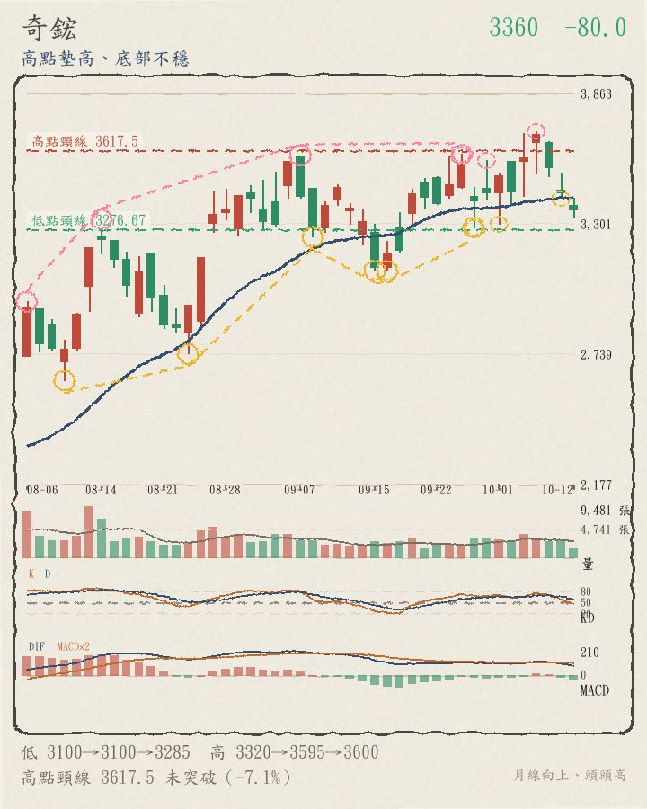
12:31 盤中 3360（-2.33%），比加權指數弱 2.27 個百分點、跌破月線 3414.75，離高點頸線 3617.5 還差 7.1%，高點還在墊高（但底部沒同步墊高）。
- 月線位置：現價 3360 在月線 3414.75 之下（-1.6%）；5 日線 3539 也在月線之上（短均在上）；月線向上
- 量能：以已過交易時間推估，今天成交量約是 20 日均量的 0.73 倍（量平），比 20 日均量少很多
- 關鍵價位：高點頸線 3617.5 還沒突破，差 7.1%；前一交易日高點 3515（低於 4.4%）；今天盤中高點 3410（低於 1.5%）；今天盤中低點 3330（高於 0.9%）
- 轉折結構：高點 3320、3595、3600 墊高（頭頭高），但低點 3100、3100、3285 沒有同步墊高；還沒確認的轉折低點 10-01 3300、10-08 3410；還沒確認的轉折高點 09-30 3575、10-06 3700（圖上虛線小圈）
富喬 1815 上櫃
133 -2.0（-1.48%）
上升趨勢（底底高＋頭頭高） 盤中成交值 51.61 億・全榜第 40 名（上櫃第 8 名）・相對大盤 -1.42
好條件 4/8：站上月線、月線向上、底底高、頭頭高
不好條件 2/8：今日下跌、相對大盤弱
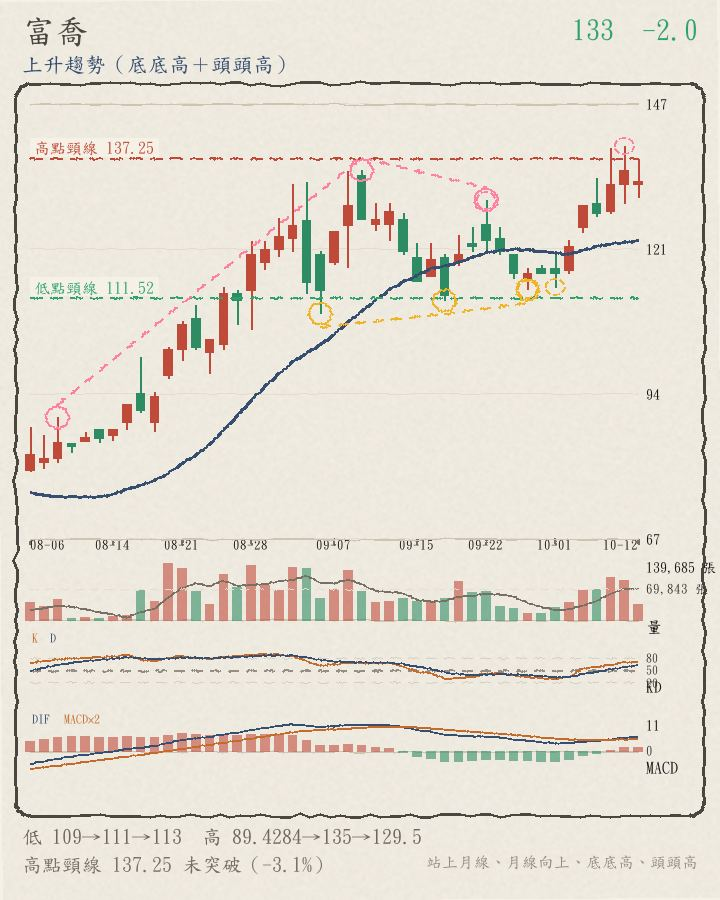
12:31 盤中 133（-1.48%），比加權指數弱 1.42 個百分點、站上月線 121.75，離高點頸線 137.25 還差 3.1%，轉折結構仍是底底高＋頭頭高。
- 月線位置：現價 133 在月線 121.75 之上（+9.2%）；5 日線 128.8 也在月線之上（短均在上）；月線向上
- 量能：以已過交易時間推估，今天成交量約是 20 日均量的 0.88 倍（量平），比 20 日均量少一些
- 關鍵價位：高點頸線 137.25 還沒突破，差 3.1%；前一交易日高點 139.5（低於 4.7%）；今天盤中高點 137（低於 2.9%）；今天盤中低點 130（高於 2.3%）
- 轉折結構：低點 108.571、111、113 一路墊高、高點 89.4284、135、129.5 也一路墊高，是底底高＋頭頭高；還沒確認的轉折低點 09-29 113、10-01 113.5；還沒確認的轉折高點 09-22 129.5、10-08 139.5（圖上虛線小圈）
台燿 6274 上櫃
1725 -15.0（-0.86%）
高點墊高、底部不穩 盤中成交值 51.35 億・全榜第 41 名（上櫃第 9 名）・相對大盤 -0.80
好條件 4/8：站上月線、月線向上、頭頭高、守住今日高檔（距今日高點 1% 內）
不好條件 2/8：今日下跌、相對大盤弱
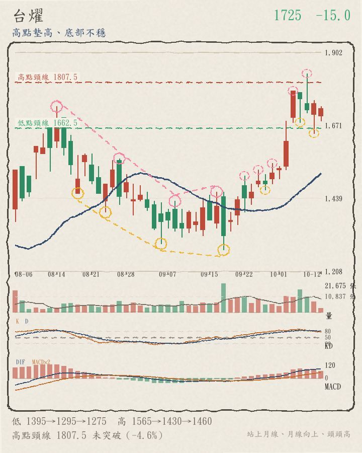
12:31 盤中 1725（-0.86%），比加權指數弱 0.80 個百分點、站上月線 1498.75，離高點頸線 1807.5 還差 4.6%，高點還在墊高（但底部沒同步墊高）。
- 月線位置：現價 1725 在月線 1498.75 之上（+15.1%）；5 日線 1723 也在月線之上（短均在上）；月線向上
- 量能：以已過交易時間推估，今天成交量約是 20 日均量的 0.42 倍（量縮），比 20 日均量少很多
- 關鍵價位：高點頸線 1807.5 還沒突破，差 4.6%；前一交易日高點 1750（低於 1.4%）；今天盤中高點 1730（低於 0.3%）；今天盤中低點 1685（高於 2.4%）
- 轉折結構：高點 1565、1430、1460 墊高（頭頭高），但低點 1395、1295、1275 沒有同步墊高；還沒確認的轉折低點 10-06 1680、10-08 1645；還沒確認的轉折高點 10-05 1780、10-07 1835（圖上虛線小圈）
台表科 6278 上市
272.5 +24.5（+9.88%）
上升趨勢（底底高＋頭頭高） 盤中成交值 51.09 億・全榜第 42 名（上市第 33 名）・相對大盤 +9.94
好條件 7/8：站上月線、月線向上、底底高、頭頭高、突破頸線、相對大盤強、攻擊量（量增＋上漲）
不好條件 0/8：無
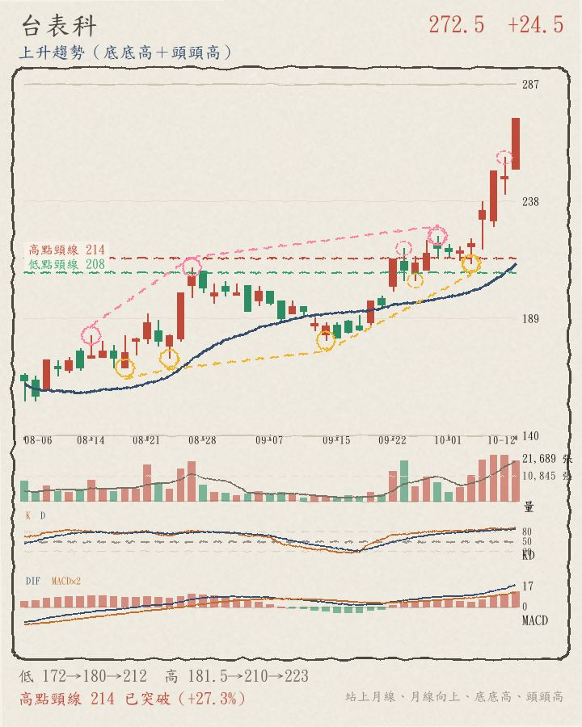
12:31 盤中 272.5（+9.88%），比加權指數強 9.94 個百分點、站上月線 207.475，已突破高點頸線 214，轉折結構仍是底底高＋頭頭高。
- 月線位置：現價 272.5 在月線 207.475 之上（+31.3%）；5 日線 233.9 也在月線之上（短均在上）；月線向上
- 量能：以已過交易時間推估，今天成交量約是 20 日均量的 3.28 倍（爆量），比 20 日均量大不少；上漲又量增，量價配合
- 關鍵價位：高點頸線 214 已站上；前一交易日高點 256（高於 6.4%）；今天盤中高點 272.5（高於 0.0%）；今天盤中低點 251（高於 8.6%）
- 轉折結構：低點 172、179.5、211.5 一路墊高、高點 181.5、210、223 也一路墊高，是底底高＋頭頭高；還沒確認的轉折低點 09-24 204.5、10-05 211.5；還沒確認的轉折高點 09-30 223、10-08 256（圖上虛線小圈）
精測 6510 上櫃
3445 +125.0（+3.77%）
區間或轉弱 盤中成交值 50.95 億・全榜第 43 名（上櫃第 10 名）・相對大盤 +3.83
好條件 4/8：站上月線、突破頸線、相對大盤強、攻擊量（量增＋上漲）
不好條件 1/8：月線下彎
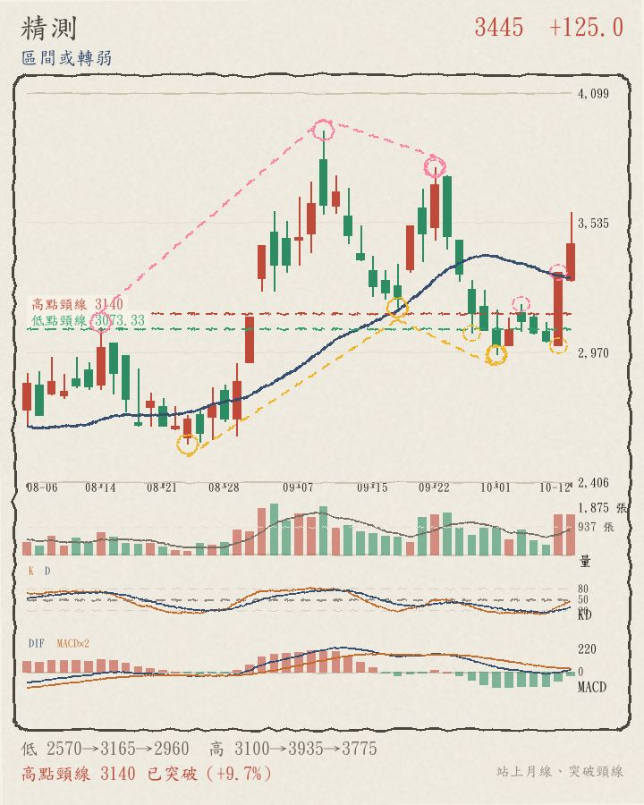
12:31 盤中 3445（+3.77%），比加權指數強 3.83 個百分點、站上月線 3304.25，已突破高點頸線 3140，轉折還沒走出明顯方向。
- 月線位置：現價 3445 在月線 3304.25 之上（+4.3%）；5 日線 3114 也在月線之下（短均在下）；月線向下
- 量能：以已過交易時間推估，今天成交量約是 20 日均量的 2.01 倍（爆量），比 20 日均量大不少；上漲又量增，量價配合
- 關鍵價位：高點頸線 3140 已站上；前一交易日高點 3320（高於 3.8%）；今天盤中高點 3580（低於 3.8%）；今天盤中低點 3280（高於 5.0%）
- 轉折結構：低點 2570、3165、2960 與高點 3100、3935、3775 都沒有明顯遞增，屬於區間震盪或轉弱；還沒確認的轉折低點 10-01 2960、10-08 3000；還沒確認的轉折高點 10-05 3180、10-08 3320（圖上虛線小圈）
台玻 1802 上市
62.7 -1.2（-1.88%）
高點墊高、底部不穩 盤中成交值 50.91 億・全榜第 44 名（上市第 34 名）・相對大盤 -1.82
好條件 4/8：站上月線、月線向上、頭頭高、突破頸線
不好條件 4/8：今日下跌、相對大盤弱、量增下跌（出貨）、貼近今日低點（1% 內）
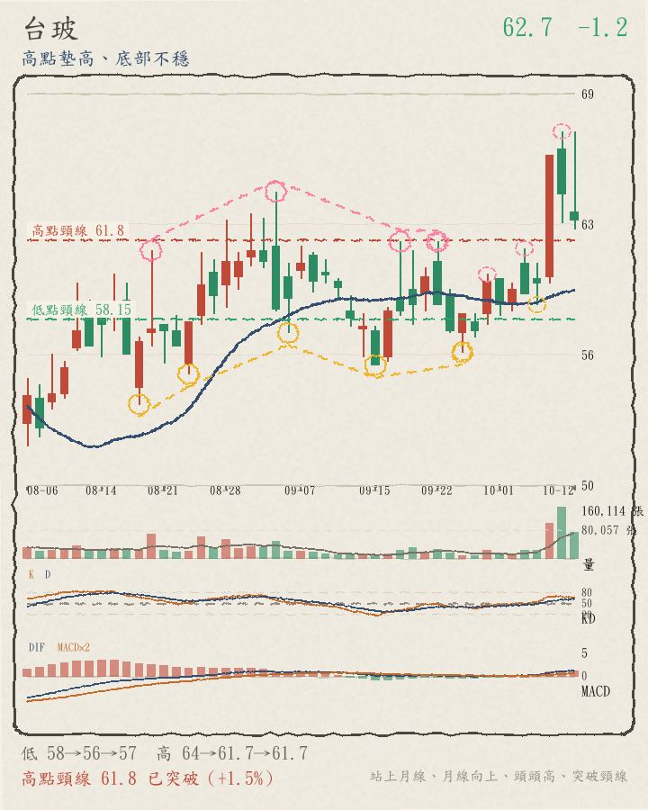
12:31 盤中 62.7（-1.88%），比加權指數弱 1.82 個百分點、站上月線 59.35，已突破高點頸線 61.8，高點還在墊高（但底部沒同步墊高）。
- 月線位置：現價 62.7 在月線 59.35 之上（+5.6%）；5 日線 61.64 也在月線之上（短均在上）；月線向上
- 量能：以已過交易時間推估，今天成交量約是 20 日均量的 4.91 倍（爆量），比 20 日均量大不少；下跌卻量增，量價背離
- 關鍵價位：高點頸線 61.8 已站上；前一交易日高點 66.8（低於 6.1%）；今天盤中高點 66.8（低於 6.1%）；今天盤中低點 62.3（高於 0.6%）
- 轉折結構：高點 64、61.7、61.7 墊高（頭頭高），但低點 57.5、56、56.6 沒有同步墊高；還沒確認的轉折低點 09-24 56.6、10-06 58.8；還沒確認的轉折高點 10-05 61.4、10-08 66.8（圖上虛線小圈）
穎崴 6515 上市
6065 +450.0（+8.01%）
高點墊高、底部不穩 盤中成交值 47.25 億・全榜第 45 名（上市第 35 名）・相對大盤 +8.07
好條件 4/8：頭頭高、相對大盤強、攻擊量（量增＋上漲）、守住今日高檔（距今日高點 1% 內）
不好條件 2/8：在月線之下、月線下彎
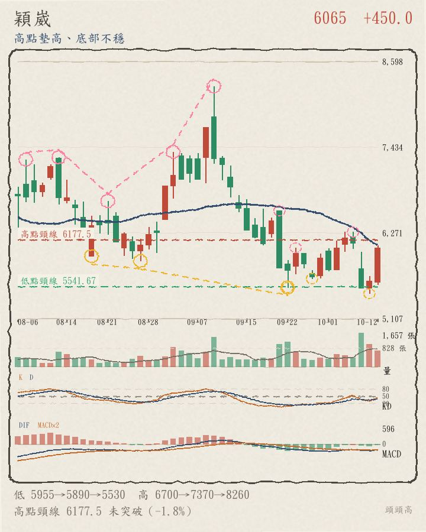
12:31 盤中 6065（+8.01%），比加權指數強 8.07 個百分點、跌破月線 6168，離高點頸線 6177.5 還差 1.8%，高點還在墊高（但底部沒同步墊高）。
- 月線位置：現價 6065 在月線 6168 之下（-1.7%）；5 日線 5908 也在月線之下（短均在下）；月線向下
- 量能：以已過交易時間推估，今天成交量約是 20 日均量的 1.62 倍（爆量），比 20 日均量大不少；上漲又量增，量價配合
- 關鍵價位：高點頸線 6177.5 還沒突破，差 1.8%；前一交易日高點 5680（高於 6.8%）；今天盤中高點 6095（低於 0.5%）；今天盤中低點 5570（高於 8.9%）
- 轉折結構：高點 6700、7370、8260 墊高（頭頭高），但低點 5955、5890、5530 沒有同步墊高；還沒確認的轉折低點 09-29 5650、10-08 5445；還沒確認的轉折高點 09-23 6070、10-06 6285（圖上虛線小圈）
和碩 4938 上市
98.6 +8.9（+9.92%）
區間或轉弱 盤中成交值 46.82 億・全榜第 46 名（上市第 36 名）・相對大盤 +9.98
好條件 4/8：站上月線、突破頸線、相對大盤強、攻擊量（量增＋上漲）
不好條件 1/8：月線下彎
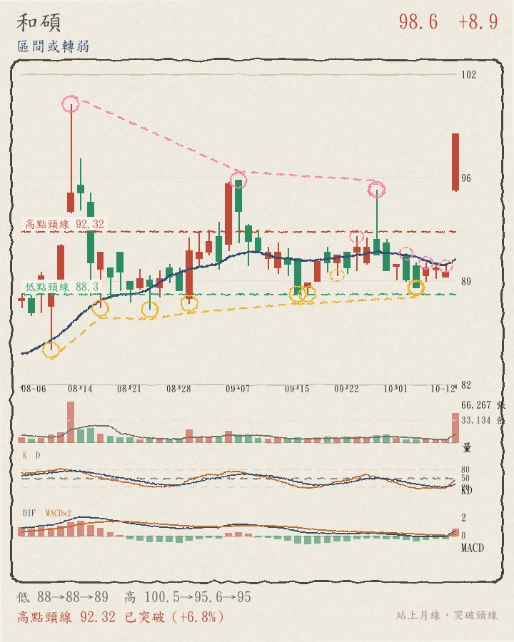
12:31 盤中 98.6（+9.92%），比加權指數強 9.98 個百分點、站上月線 90.155，已突破高點頸線 92.32，轉折還沒走出明顯方向。
- 月線位置：現價 98.6 在月線 90.155 之上（+9.4%）；5 日線 89.52 也在月線之下（短均在下）；月線向下
- 量能：以已過交易時間推估，今天成交量約是 20 日均量的 8.39 倍（爆量），比 20 日均量大不少；上漲又量增，量價配合
- 關鍵價位：高點頸線 92.32 已站上；前一交易日高點 90.1（高於 9.4%）；今天盤中高點 98.6（高於 0.0%）；今天盤中低點 94.9（高於 3.9%）
- 轉折結構：低點 88.3、88.3、88.7 與高點 100.5、95.6、95 都沒有明顯遞增，屬於區間震盪或轉弱；還沒確認的轉折低點 09-21 89.5、10-05 88.7；還沒確認的轉折高點 10-06 90.3、10-08 90.1（圖上虛線小圈）
緯創 3231 上市
189 +0.5（+0.27%）
高點墊高、底部不穩 盤中成交值 45.74 億・全榜第 47 名（上市第 37 名）・相對大盤 +0.33
好條件 3/8：站上月線、頭頭高、相對大盤強
不好條件 1/8：月線下彎

12:31 盤中 189（+0.27%），比加權指數強 0.33 個百分點、站上月線 185.5，離高點頸線 190.9 還差 1.0%，高點還在墊高（但底部沒同步墊高）。
- 月線位置：現價 189 在月線 185.5 之上（+1.9%）；5 日線 187.8 也在月線之上（短均在上）；月線向下
- 量能：以已過交易時間推估，今天成交量約是 20 日均量的 0.71 倍（量平），比 20 日均量少很多；上漲但量縮，量價背離
- 關鍵價位：高點頸線 190.9 還沒突破，差 1.0%；前一交易日高點 190（低於 0.5%）；今天盤中高點 192（低於 1.6%）；今天盤中低點 187（高於 1.1%）
- 轉折結構：高點 188、200.5、190.5 墊高（頭頭高），但低點 174、179.5、178 沒有同步墊高；還沒確認的轉折低點 09-24 178、10-08 182.5；還沒確認的轉折高點 10-06 194.5、10-08 190（圖上虛線小圈）
宏捷科 8086 上櫃
150 -4.0（-2.60%）
高點墊高、底部不穩 盤中成交值 45.6 億・全榜第 48 名（上櫃第 11 名）・相對大盤 -2.54
好條件 4/8：站上月線、月線向上、頭頭高、突破頸線
不好條件 3/8：今日下跌、相對大盤弱、量增下跌（出貨）
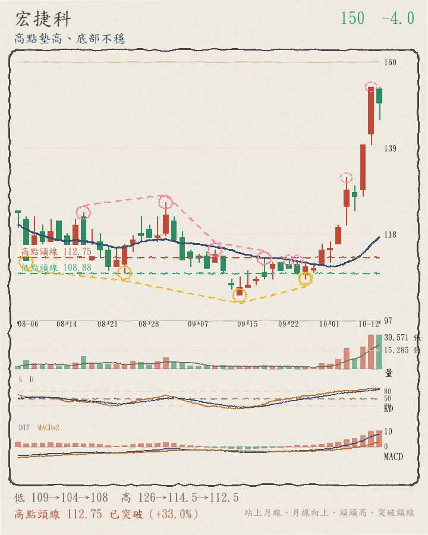
12:31 盤中 150（-2.60%），比加權指數弱 2.54 個百分點、站上月線 115.8，已突破高點頸線 112.75，高點還在墊高（但底部沒同步墊高）。
- 月線位置：現價 150 在月線 115.8 之上（+29.5%）；5 日線 134.1 也在月線之上（短均在上）；月線向上
- 量能：以已過交易時間推估，今天成交量約是 20 日均量的 8.49 倍（爆量），比 20 日均量大不少；下跌卻量增，量價背離
- 關鍵價位：高點頸線 112.75 已站上；前一交易日高點 154（低於 2.6%）；今天盤中高點 154（低於 2.6%）；今天盤中低點 146（高於 2.7%）
- 轉折結構：高點 126、114.5、112.5 墊高（頭頭高），但低點 109、103.5、107.5 沒有同步墊高；還沒確認的轉折低點 09-24 107.5；還沒確認的轉折高點 10-05 132、10-08 154（圖上虛線小圈）
金山電 8042 上櫃
146 +7.5（+5.42%）
上升趨勢（底底高＋頭頭高） 盤中成交值 45.5 億・全榜第 49 名（上櫃第 12 名）・相對大盤 +5.48
好條件 7/8：站上月線、月線向上、底底高、頭頭高、突破頸線、相對大盤強、攻擊量（量增＋上漲）
不好條件 0/8：無
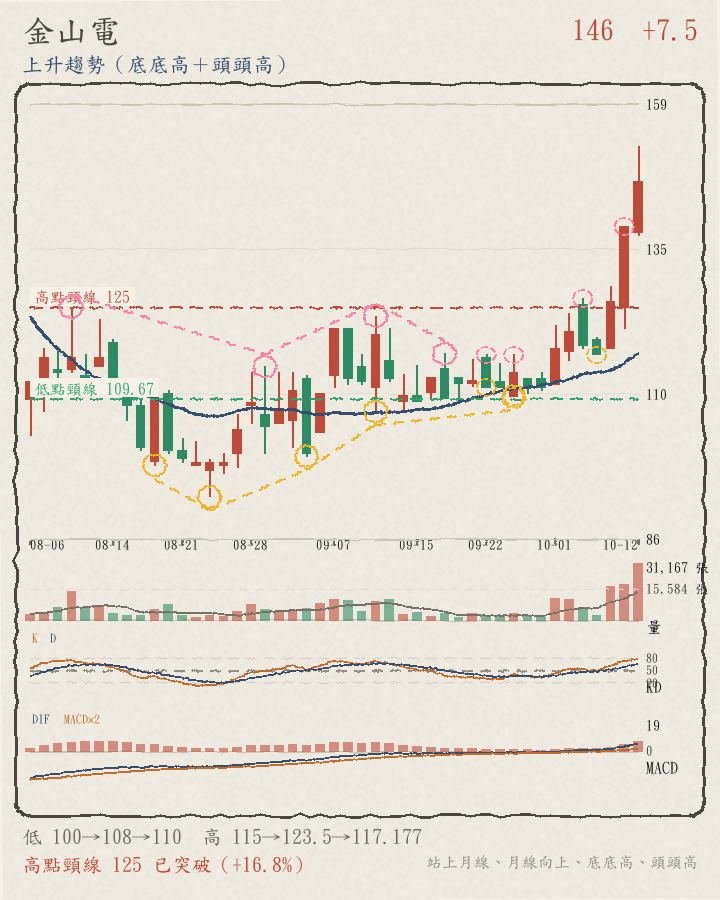
12:31 盤中 146（+5.42%），比加權指數強 5.48 個百分點、站上月線 115.616，已突破高點頸線 125，轉折結構仍是底底高＋頭頭高。
- 月線位置：現價 146 在月線 115.616 之上（+26.3%）；5 日線 124.2 也在月線之上（短均在上）；月線向上
- 量能：以已過交易時間推估，今天成交量約是 20 日均量的 6.79 倍（爆量），比 20 日均量大不少；上漲又量增，量價配合
- 關鍵價位：高點頸線 125 已站上；前一交易日高點 138.5（高於 5.4%）；今天盤中高點 152（低於 3.9%）；今天盤中低點 137（高於 6.6%）
- 轉折結構：低點 100、107.5、110 一路墊高、高點 115、123.5、117.177 也一路墊高，是底底高＋頭頭高；還沒確認的轉折低點 09-24 110、10-06 117；還沒確認的轉折高點 10-05 126.5、10-08 138.5（圖上虛線小圈）
矽格 6257 上市
286 +3.0（+1.06%）
高點墊高、底部不穩 盤中成交值 45.47 億・全榜第 50 名（上市第 38 名）・相對大盤 +1.12
好條件 6/8：站上月線、月線向上、頭頭高、突破頸線、相對大盤強、攻擊量（量增＋上漲）
不好條件 0/8：無
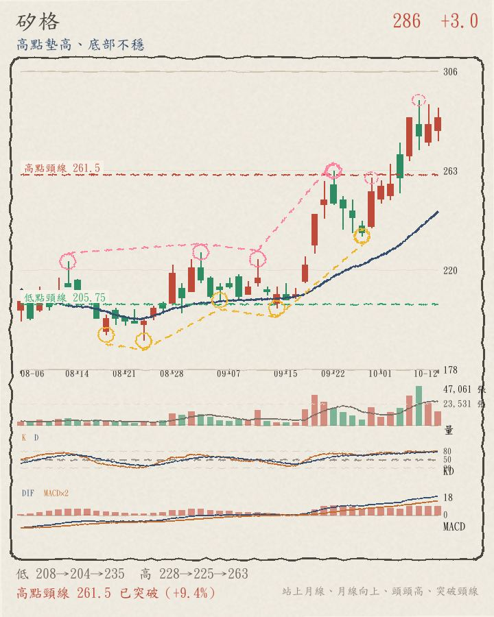
12:31 盤中 286（+1.06%），比加權指數強 1.12 個百分點、站上月線 241.85，已突破高點頸線 261.5，高點還在墊高（但底部沒同步墊高）。
- 月線位置：現價 286 在月線 241.85 之上（+18.3%）；5 日線 272.9 也在月線之上（短均在上）；月線向上
- 量能：以已過交易時間推估，今天成交量約是 20 日均量的 1.24 倍（量增），比 20 日均量大不少；上漲又量增，量價配合
- 關鍵價位：高點頸線 261.5 已站上；前一交易日高點 291.5（低於 1.9%）；今天盤中高點 290（低於 1.4%）；今天盤中低點 276（高於 3.6%）
- 轉折結構：高點 228、225、263 墊高（頭頭高），但低點 207.5、204、235 沒有同步墊高；還沒確認的轉折低點 09-29 235；還沒確認的轉折高點 09-30 260、10-07 293.5（圖上虛線小圈）
景碩 3189 上市
1060 -15.0（-1.40%）
區間或轉弱 盤中成交值 44.38 億・全榜第 51 名（上市第 39 名）・相對大盤 -1.34
好條件 2/8：站上月線、月線向上
不好條件 3/8：今日下跌、相對大盤弱、貼近今日低點（1% 內）
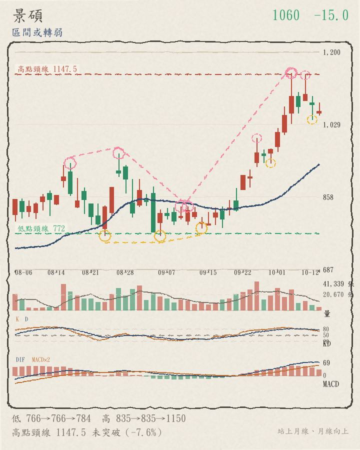
12:31 盤中 1060（-1.40%），比加權指數弱 1.34 個百分點、站上月線 922，離高點頸線 1147.5 還差 7.6%，轉折還沒走出明顯方向。
- 月線位置：現價 1060 在月線 922 之上（+15.0%）；5 日線 1078 也在月線之上（短均在上）；月線向上
- 量能：以已過交易時間推估，今天成交量約是 20 日均量的 0.29 倍（量縮），比 20 日均量少很多
- 關鍵價位：高點頸線 1147.5 還沒突破，差 7.6%；前一交易日高點 1095（低於 3.2%）；今天盤中高點 1080（低於 1.9%）；今天盤中低點 1050（高於 1.0%）
- 轉折結構：低點 766、766、784 與高點 835、835、1150 都沒有明顯遞增，屬於區間震盪或轉弱；還沒確認的轉折低點 09-30 937、10-08 1040；還沒確認的轉折高點 10-05 1150、10-07 1145（圖上虛線小圈）
緯穎 6669 上市
2245 +5.0（+0.22%）
高點墊高、底部不穩 盤中成交值 41.4 億・全榜第 52 名（上市第 40 名）・相對大盤 +0.28
好條件 3/8：站上月線、頭頭高、相對大盤強
不好條件 2/8：貼近今日低點（1% 內）、月線下彎
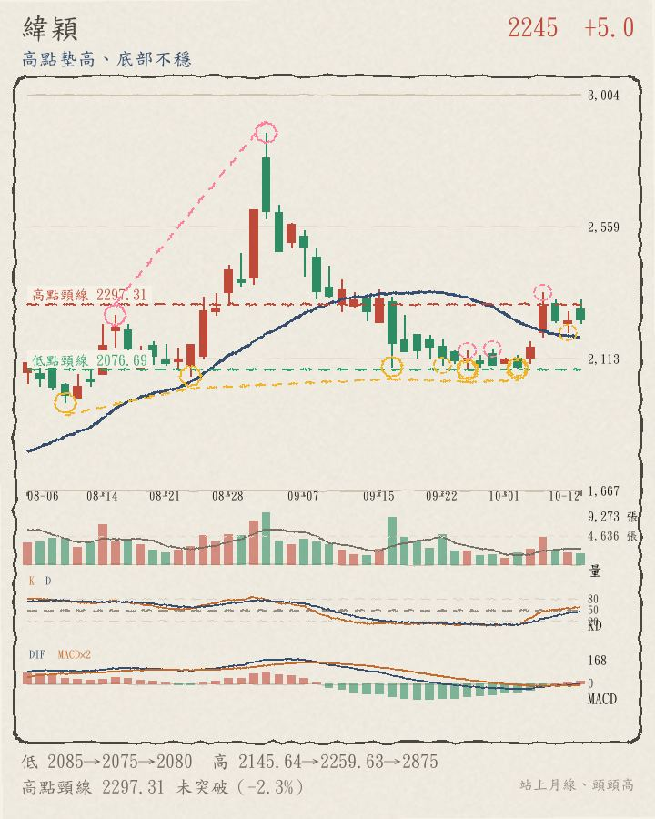
12:31 盤中 2245（+0.22%），比加權指數強 0.28 個百分點、站上月線 2189.75，離高點頸線 2297.31 還差 2.3%，高點還在墊高（但底部沒同步墊高）。
- 月線位置：現價 2245 在月線 2189.75 之上（+2.5%）；5 日線 2201 也在月線之上（短均在上）；月線向下
- 量能：以已過交易時間推估，今天成交量約是 20 日均量的 0.76 倍（量平），比 20 日均量少很多；上漲但量縮，量價背離
- 關鍵價位：高點頸線 2297.31 還沒突破，差 2.3%；前一交易日高點 2270（低於 1.1%）；今天盤中高點 2310（低於 2.8%）；今天盤中低點 2230（高於 0.7%）
- 轉折結構：高點 2145.64、2259.63、2875 墊高（頭頭高），但低點 2085、2075、2080 沒有同步墊高；還沒確認的轉折低點 10-02 2080、10-08 2200；還沒確認的轉折高點 09-30 2145、10-06 2335（圖上虛線小圈）
禾伸堂 3026 上市
843 -34.0（-3.88%）
上升趨勢（底底高＋頭頭高） 盤中成交值 40.97 億・全榜第 53 名（上市第 41 名）・相對大盤 -3.82
好條件 4/8：站上月線、月線向上、底底高、頭頭高
不好條件 3/8：今日下跌、相對大盤弱、貼近今日低點（1% 內）
12:31 盤中 843（-3.88%），比加權指數弱 3.82 個百分點、站上月線 792.15，離高點頸線 875 還差 3.7%，轉折結構仍是底底高＋頭頭高。
- 月線位置：現價 843 在月線 792.15 之上（+6.4%）；5 日線 832.8 也在月線之上（短均在上）；月線向上
- 量能：以已過交易時間推估，今天成交量約是 20 日均量的 0.58 倍（量縮），比 20 日均量少很多
- 關鍵價位：高點頸線 875 還沒突破，差 3.7%；前一交易日高點 888（低於 5.1%）；今天盤中高點 869（低於 3.0%）；今天盤中低點 841（高於 0.2%）
- 轉折結構：低點 632、717、760 一路墊高、高點 826、856、881 也一路墊高，是底底高＋頭頭高；還沒確認的轉折低點 09-23 760、10-06 796；還沒確認的轉折高點 10-02 881、10-08 888（圖上虛線小圈）
台虹 8039 上市
301.5 -4.0（-1.31%）
高點墊高、底部不穩 盤中成交值 40.03 億・全榜第 54 名（上市第 42 名）・相對大盤 -1.25
好條件 2/8：站上月線、頭頭高
不好條件 4/8：今日下跌、相對大盤弱、跌破昨日低點、月線下彎
12:31 盤中 301.5（-1.31%），比加權指數弱 1.25 個百分點、站上月線 279.6，離高點頸線 329.5 還差 8.5%，高點還在墊高（但底部沒同步墊高）。
- 月線位置：現價 301.5 在月線 279.6 之上（+7.8%）；5 日線 301 也在月線之上（短均在上）；月線向下
- 量能：以已過交易時間推估，今天成交量約是 20 日均量的 0.81 倍（量平），比 20 日均量少很多
- 關鍵價位：高點頸線 329.5 還沒突破，差 8.5%；前一交易日高點 331.5（低於 9.0%）；今天盤中高點 310（低於 2.7%）；今天盤中低點 296（高於 1.9%）
- 轉折結構：高點 254、364、327.5 墊高（頭頭高），但低點 291、256.5、253 沒有同步墊高；還沒確認的轉折低點 10-02 280.5、10-07 288；還沒確認的轉折高點 10-05 308、10-08 331.5（圖上虛線小圈）
愛普* 6531 上市
945 -35.0（-3.57%）
區間或轉弱 盤中成交值 37.78 億・全榜第 55 名（上市第 43 名）・相對大盤 -3.51
好條件 1/8：月線向上
不好條件 5/8：今日下跌、相對大盤弱、在月線之下、量增下跌（出貨）、跌破昨日低點
12:31 盤中 945（-3.57%），比加權指數弱 3.51 個百分點、跌破月線 971.85，離高點頸線 1077.5 還差 12.3%，轉折還沒走出明顯方向。
- 月線位置：現價 945 在月線 971.85 之下（-2.8%）；5 日線 1016 也在月線之上（短均在上）；月線向上
- 量能：以已過交易時間推估，今天成交量約是 20 日均量的 1.48 倍（量增），比 20 日均量大不少；下跌卻量增，量價背離
- 關鍵價位：高點頸線 1077.5 還沒突破，差 12.3%；前一交易日高點 1015（低於 6.9%）；今天盤中高點 982（低於 3.8%）；今天盤中低點 928（高於 1.8%）
- 轉折結構：低點 901、887、914 與高點 1065、1005、1090 都沒有明顯遞增，屬於區間震盪或轉弱；還沒確認的轉折低點 10-01 914、10-08 980；還沒確認的轉折高點 09-24 1005、10-05 1090（圖上虛線小圈）
台塑化 6505 上市
109 -1.5（-1.36%）
上升趨勢（底底高＋頭頭高） 盤中成交值 37.47 億・全榜第 56 名（上市第 44 名）・相對大盤 -1.30
好條件 6/8：站上月線、月線向上、底底高、頭頭高、突破頸線、守住今日高檔（距今日高點 1% 內）
不好條件 3/8：今日下跌、相對大盤弱、量增下跌（出貨）
12:31 盤中 109（-1.36%），比加權指數弱 1.30 個百分點、站上月線 91.49，已突破高點頸線 90.2，轉折結構仍是底底高＋頭頭高。
- 月線位置：現價 109 在月線 91.49 之上（+19.1%）；5 日線 103.52 也在月線之上（短均在上）；月線向上
- 量能：以已過交易時間推估，今天成交量約是 20 日均量的 1.59 倍（爆量），比 20 日均量大不少；下跌卻量增，量價背離
- 關鍵價位：高點頸線 90.2 已站上；前一交易日高點 114（低於 4.4%）；今天盤中高點 110（低於 0.9%）；今天盤中低點 105（高於 3.8%）
- 轉折結構：低點 65.4、68.6、80 一路墊高、高點 76.5、90.6、89.8 也一路墊高，是底底高＋頭頭高；還沒確認的轉折低點 10-01 92.8、10-06 97.7；還沒確認的轉折高點 10-02 103、10-08 114（圖上虛線小圈）
精材 3374 上櫃
482.5 -14.5（-2.92%）
上升趨勢（底底高＋頭頭高） 盤中成交值 36.58 億・全榜第 57 名（上櫃第 13 名）・相對大盤 -2.86
好條件 4/8：站上月線、月線向上、底底高、頭頭高
不好條件 3/8：今日下跌、相對大盤弱、貼近今日低點（1% 內）
12:31 盤中 482.5（-2.92%），比加權指數弱 2.86 個百分點、站上月線 461.475，離高點頸線 521 還差 7.4%，轉折結構仍是底底高＋頭頭高。
- 月線位置：現價 482.5 在月線 461.475 之上（+4.6%）；5 日線 489.5 也在月線之上（短均在上）；月線向上
- 量能：以已過交易時間推估，今天成交量約是 20 日均量的 1.04 倍（量平），跟 20 日均量差不多
- 關鍵價位：高點頸線 521 還沒突破，差 7.4%；前一交易日高點 512（低於 5.8%）；今天盤中高點 507（低於 4.8%）；今天盤中低點 478（高於 0.9%）
- 轉折結構：低點 289、407、436.5 一路墊高、高點 431、496、487 也一路墊高，是底底高＋頭頭高；還沒確認的轉折低點 10-01 450、10-07 475.5；還沒確認的轉折高點 10-06 530、10-08 512（圖上虛線小圈）
台亞 2340 上市
52.6 -0.3（-0.57%）
高點墊高、底部不穩 盤中成交值 36.36 億・全榜第 58 名（上市第 45 名）・相對大盤 -0.51
好條件 4/8：站上月線、月線向上、頭頭高、突破頸線
不好條件 4/8：今日下跌、相對大盤弱、量增下跌（出貨）、貼近今日低點（1% 內）
12:31 盤中 52.6（-0.57%），比加權指數弱 0.51 個百分點、站上月線 38.165，已突破高點頸線 35.5，高點還在墊高（但底部沒同步墊高）。
- 月線位置：現價 52.6 在月線 38.165 之上（+37.8%）；5 日線 48.88 也在月線之上（短均在上）；月線向上
- 量能：以已過交易時間推估，今天成交量約是 20 日均量的 6.22 倍（爆量），比 20 日均量大不少；下跌卻量增，量價背離
- 關鍵價位：高點頸線 35.5 已站上；前一交易日高點 52.9（低於 0.6%）；今天盤中高點 56.6（低於 7.1%）；今天盤中低點 52.3（高於 0.6%）
- 轉折結構：高點 32.7、35.7、35.3 墊高（頭頭高），但低點 30.5、29.25、30.7 沒有同步墊高；還沒確認的轉折低點 09-24 34.15、10-07 43.5；還沒確認的轉折高點 10-06 50.4、10-08 52.9（圖上虛線小圈）
健策 3653 上市
7050 -115.0（-1.61%）
高點墊高、底部不穩 盤中成交值 35.74 億・全榜第 59 名（上市第 46 名）・相對大盤 -1.55
好條件 3/8：站上月線、月線向上、頭頭高
不好條件 2/8：今日下跌、相對大盤弱
12:31 盤中 7050（-1.61%），比加權指數弱 1.55 個百分點、站上月線 6257，離高點頸線 7281.67 還差 3.2%，高點還在墊高（但底部沒同步墊高）。
- 月線位置：現價 7050 在月線 6257 之上（+12.7%）；5 日線 7011 也在月線之上（短均在上）；月線向上
- 量能：以已過交易時間推估，今天成交量約是 20 日均量的 0.57 倍（量縮），比 20 日均量少很多
- 關鍵價位：高點頸線 7281.67 還沒突破，差 3.2%；前一交易日高點 7245（低於 2.7%）；今天盤中高點 7175（低於 1.7%）；今天盤中低點 6920（高於 1.9%）
- 轉折結構：高點 5920、7160、7440 墊高（頭頭高），但低點 4910、5480、5210 沒有同步墊高；還沒確認的轉折低點 10-05 6760、10-07 6760；還沒確認的轉折高點 10-05 7440、10-08 7245（圖上虛線小圈）
富世達 6805 上市
2255 -115.0（-4.85%）
區間或轉弱 盤中成交值 35.4 億・全榜第 60 名（上市第 47 名）・相對大盤 -4.79
好條件 1/8：月線向上
不好條件 6/8：跌破前低、今日下跌、相對大盤弱、在月線之下、量增下跌（出貨）、跌破昨日低點
12:31 盤中 2255（-4.85%），比加權指數弱 4.79 個百分點、跌破月線 2333，離高點頸線 2485 還差 9.3%，轉折還沒走出明顯方向。
- 月線位置：現價 2255 在月線 2333 之下（-3.3%）；5 日線 2400 也在月線之上（短均在上）；月線向上
- 量能：以已過交易時間推估，今天成交量約是 20 日均量的 1.33 倍（量增），比 20 日均量大不少；下跌卻量增，量價背離
- 關鍵價位：已跌破前一個轉折低點；高點頸線 2485 還在現價上方 9.3%；前一交易日高點 2425（低於 7.0%）；今天盤中高點 2365（低於 4.7%）；今天盤中低點 2225（高於 1.3%）
- 轉折結構：低點 2010、2010、2300 與高點 2435、2325、2750 都沒有明顯遞增，屬於區間震盪或轉弱；還沒確認的轉折低點 10-02 2300、10-08 2310；還沒確認的轉折高點 10-05 2510、10-07 2510（圖上虛線小圈）
光聖 6442 上市
1720 -65.0（-3.64%）
區間或轉弱 盤中成交值 35 億・全榜第 61 名（上市第 48 名）・相對大盤 -3.58
好條件 1/8：站上月線
不好條件 5/8：今日下跌、相對大盤弱、量增下跌（出貨）、貼近今日低點（1% 內）、月線下彎
12:31 盤中 1720（-3.64%），比加權指數弱 3.58 個百分點、站上月線 1603，離高點頸線 1725 還差 0.3%，轉折還沒走出明顯方向。
- 月線位置：現價 1720 在月線 1603 之上（+7.3%）；5 日線 1716 也在月線之上（短均在上）；月線向下
- 量能：以已過交易時間推估，今天成交量約是 20 日均量的 1.25 倍（量增），比 20 日均量大不少；下跌卻量增，量價背離
- 關鍵價位：高點頸線 1725 還沒突破，差 0.3%；前一交易日高點 1790（低於 3.9%）；今天盤中高點 1785（低於 3.6%）；今天盤中低點 1715（高於 0.3%）
- 轉折結構：低點 1560、1495、1465 與高點 1705、1695、1920 都沒有明顯遞增，屬於區間震盪或轉弱；還沒確認的轉折低點 10-01 1465、10-08 1715；還沒確認的轉折高點 10-05 1755、10-07 1815（圖上虛線小圈）
宏致 3605 上市
179 +16.0（+9.82%）
底部墊高、未過前高 盤中成交值 34.54 億・全榜第 62 名（上市第 49 名）・相對大盤 +9.88
好條件 5/8：站上月線、月線向上、底底高、相對大盤強、攻擊量（量增＋上漲）
不好條件 0/8：無
12:31 盤中 179（+9.82%），比加權指數強 9.88 個百分點、站上月線 157.175，離高點頸線 186.5 還差 4.0%，底部還在墊高（但高點沒同步創高）。
- 月線位置：現價 179 在月線 157.175 之上（+13.9%）；5 日線 168.1 也在月線之上（短均在上）；月線向上
- 量能：以已過交易時間推估，今天成交量約是 20 日均量的 1.17 倍（量增），比 20 日均量大不少；上漲又量增，量價配合
- 關鍵價位：高點頸線 186.5 還沒突破，差 4.0%；前一交易日高點 166（高於 7.8%）；今天盤中高點 179（高於 0.0%）；今天盤中低點 162（高於 10.5%）
- 轉折結構：低點 106.5、113.5、118 墊高（底底高），但高點 141、134.5、190.5 沒有同步創高；還沒確認的轉折低點 10-01 168.5、10-06 160；還沒確認的轉折高點 10-02 182、10-07 185（圖上虛線小圈）
南茂 8150 上市
124 -4.0（-3.12%）
高點墊高、底部不穩 盤中成交值 34.51 億・全榜第 63 名（上市第 50 名）・相對大盤 -3.06
好條件 3/8：站上月線、月線向上、頭頭高
不好條件 2/8：今日下跌、相對大盤弱
12:31 盤中 124（-3.12%），比加權指數弱 3.06 個百分點、站上月線 105.245，離高點頸線 131.25 還差 5.5%，高點還在墊高（但底部沒同步墊高）。
- 月線位置：現價 124 在月線 105.245 之上（+17.8%）；5 日線 127 也在月線之上（短均在上）；月線向上
- 量能：以已過交易時間推估，今天成交量約是 20 日均量的 0.66 倍（量縮），比 20 日均量少很多
- 關鍵價位：高點頸線 131.25 還沒突破，差 5.5%；前一交易日高點 129.5（低於 4.2%）；今天盤中高點 129.5（低於 4.2%）；今天盤中低點 120.5（高於 2.9%）
- 轉折結構：高點 95.4、116、133 墊高（頭頭高），但低點 86.6、87.9、84.3 沒有同步墊高；還沒確認的轉折低點 10-06 123、10-08 124；還沒確認的轉折高點 10-05 133、10-08 129.5（圖上虛線小圈）
聯亞 3081 上櫃
2940 -20.0（-0.68%）
高點墊高、底部不穩 盤中成交值 34.13 億・全榜第 64 名（上櫃第 14 名）・相對大盤 -0.62
好條件 2/8：站上月線、頭頭高
不好條件 4/8：今日下跌、相對大盤弱、跌破昨日低點、月線下彎
12:31 盤中 2940（-0.68%），比加權指數弱 0.62 個百分點、站上月線 2817.25，離高點頸線 3157.5 還差 6.9%，高點還在墊高（但底部沒同步墊高）。
- 月線位置：現價 2940 在月線 2817.25 之上（+4.4%）；5 日線 2989 也在月線之上（短均在上）；月線向下
- 量能：以已過交易時間推估，今天成交量約是 20 日均量的 0.45 倍（量縮），比 20 日均量少很多
- 關鍵價位：高點頸線 3157.5 還沒突破，差 6.9%；前一交易日高點 3120（低於 5.8%）；今天盤中高點 2985（低於 1.5%）；今天盤中低點 2890（高於 1.7%）
- 轉折結構：高點 3600、2930、2950 墊高（頭頭高），但低點 1450、2650、2585 沒有同步墊高；還沒確認的轉折低點 10-01 2605、10-08 2955；還沒確認的轉折高點 10-05 3105、10-07 3210（圖上虛線小圈）
雙鴻 3324 上櫃
1540 +20.0（+1.32%）
高點墊高、底部不穩 盤中成交值 32.12 億・全榜第 65 名（上櫃第 15 名）・相對大盤 +1.38
好條件 5/8：站上月線、月線向上、頭頭高、相對大盤強、守住今日高檔（距今日高點 1% 內）
不好條件 0/8：無
12:31 盤中 1540（+1.32%），比加權指數強 1.38 個百分點、站上月線 1485.75，離高點頸線 1591.67 還差 3.2%，高點還在墊高（但底部沒同步墊高）。
- 月線位置：現價 1540 在月線 1485.75 之上（+3.6%）；5 日線 1526 也在月線之上（短均在上）；月線向上
- 量能：以已過交易時間推估，今天成交量約是 20 日均量的 0.74 倍（量平），比 20 日均量少很多；上漲但量縮，量價背離
- 關鍵價位：高點頸線 1591.67 還沒突破，差 3.2%；前一交易日高點 1570（低於 1.9%）；今天盤中高點 1545（低於 0.3%）；今天盤中低點 1455（高於 5.8%）
- 轉折結構：高點 1080、1505、1750 墊高（頭頭高），但低點 1300、1240、1480 沒有同步墊高；還沒確認的轉折低點 10-05 1490、10-08 1395；還沒確認的轉折高點 10-05 1575、10-08 1570（圖上虛線小圈）
上詮 3363 上櫃
602 -65.0（-9.75%）
區間或轉弱 盤中成交值 31.23 億・全榜第 66 名（上櫃第 16 名）・相對大盤 -9.69
好條件 0/8：無
不好條件 8/8：跌破前低、今日下跌、相對大盤弱、在月線之下、量增下跌（出貨）、貼近今日低點（1% 內）、跌破昨日低點、月線下彎
12:31 盤中 602（-9.75%），比加權指數弱 9.69 個百分點、跌破月線 666.85，離高點頸線 687.8 還差 12.5%，轉折還沒走出明顯方向。
- 月線位置：現價 602 在月線 666.85 之下（-9.7%）；5 日線 666.2 也在月線之下（短均在下）；月線向下
- 量能：以已過交易時間推估，今天成交量約是 20 日均量的 2.28 倍（爆量），比 20 日均量大不少；下跌卻量增，量價背離
- 關鍵價位：已跌破前一個轉折低點；高點頸線 687.8 還在現價上方 12.5%；前一交易日高點 676（低於 10.9%）；今天盤中高點 634（低於 5.0%）；今天盤中低點 601（高於 0.2%）
- 轉折結構：低點 647、647、629 與高點 656、850、699 都沒有明顯遞增，屬於區間震盪或轉弱；還沒確認的轉折低點 10-01 641、10-06 645；還沒確認的轉折高點 10-05 688、10-07 693（圖上虛線小圈）
合晶 6182 上櫃
125 -4.0（-3.10%）
區間或轉弱 盤中成交值 30.16 億・全榜第 67 名（上櫃第 17 名）・相對大盤 -3.04
好條件 2/8：站上月線、月線向上
不好條件 3/8：今日下跌、相對大盤弱、跌破昨日低點
12:31 盤中 125（-3.10%），比加權指數弱 3.04 個百分點、站上月線 119.175，離高點頸線 138.5 還差 9.7%，轉折還沒走出明顯方向。
- 月線位置：現價 125 在月線 119.175 之上（+4.9%）；5 日線 131.7 也在月線之上（短均在上）；月線向上
- 量能：以已過交易時間推估，今天成交量約是 20 日均量的 0.42 倍（量縮），比 20 日均量少很多
- 關鍵價位：高點頸線 138.5 還沒突破，差 9.7%；前一交易日高點 133（低於 6.0%）；今天盤中高點 128（低於 2.3%）；今天盤中低點 123（高於 1.6%）
- 轉折結構：低點 103.5、104、100 與高點 125、140、140 都沒有明顯遞增，屬於區間震盪或轉弱；還沒確認的轉折低點 10-06 126.5、10-08 125.5；還沒確認的轉折高點 10-05 140、10-07 135.5（圖上虛線小圈）
群聯 8299 上櫃
2060 +0.0（+0.00%）
區間或轉弱 盤中成交值 30.12 億・全榜第 68 名（上櫃第 18 名）・相對大盤 +0.06
好條件 2/8：月線向上、相對大盤強
不好條件 2/8：跌破前低、在月線之下
12:31 盤中 2060（+0.00%），比加權指數強 0.06 個百分點、跌破月線 2077.25，離高點頸線 2196.25 還差 6.2%，轉折還沒走出明顯方向。
- 月線位置：現價 2060 在月線 2077.25 之下（-0.8%）；5 日線 2081 也在月線之上（短均在上）；月線向上
- 量能：以已過交易時間推估，今天成交量約是 20 日均量的 0.61 倍（量縮），比 20 日均量少很多
- 關鍵價位：已跌破前一個轉折低點；高點頸線 2196.25 還在現價上方 6.2%；前一交易日高點 2095（低於 1.7%）；今天盤中高點 2115（低於 2.6%）；今天盤中低點 2030（高於 1.5%）
- 轉折結構：低點 1970、1900、2080 與高點 2195、2160、2350 都沒有明顯遞增，屬於區間震盪或轉弱；還沒確認的轉折低點 10-05 2055、10-08 2050；還沒確認的轉折高點 09-23 2350、09-30 2215（圖上虛線小圈）
信驊 5274 上櫃
17650 +165.0（+0.94%）
高點墊高、底部不穩 盤中成交值 29.83 億・全榜第 69 名（上櫃第 19 名）・相對大盤 +1.00
好條件 3/8：月線向上、頭頭高、相對大盤強
不好條件 1/8：在月線之下
12:31 盤中 17650（+0.94%），比加權指數強 1.00 個百分點、跌破月線 18855.5，離高點頸線 19845 還差 11.1%，高點還在墊高（但底部沒同步墊高）。
- 月線位置：現價 17650 在月線 18855.5 之下（-6.4%）；5 日線 18516 也在月線之下（短均在下）；月線向上
- 量能：以已過交易時間推估，今天成交量約是 20 日均量的 1.00 倍（量平），跟 20 日均量差不多
- 關鍵價位：高點頸線 19845 還沒突破，差 11.1%；前一交易日高點 17840（低於 1.1%）；今天盤中高點 18080（低於 2.4%）；今天盤中低點 16935（高於 4.2%）
- 轉折結構：高點 18600、19795、21800 墊高（頭頭高），但低點 15930、14600、17170 沒有同步墊高；還沒確認的轉折低點 10-02 18355、10-08 15975；還沒確認的轉折高點 09-22 21800、10-06 19895（圖上虛線小圈）
系統電 5309 上櫃
71.8 +4.0（+5.90%）
高點墊高、底部不穩 盤中成交值 28.68 億・全榜第 70 名（上櫃第 20 名）・相對大盤 +5.96
好條件 6/8：站上月線、月線向上、頭頭高、突破頸線、相對大盤強、攻擊量（量增＋上漲）
不好條件 0/8：無
12:31 盤中 71.8（+5.90%），比加權指數強 5.96 個百分點、站上月線 56.535，已突破高點頸線 69.45，高點還在墊高（但底部沒同步墊高）。
- 月線位置：現價 71.8 在月線 56.535 之上（+27.0%）；5 日線 67 也在月線之上（短均在上）；月線向上
- 量能：以已過交易時間推估，今天成交量約是 20 日均量的 9.72 倍（爆量），比 20 日均量大不少；上漲又量增，量價配合
- 關鍵價位：高點頸線 69.45 已站上；前一交易日高點 69.9（高於 2.7%）；今天盤中高點 74.5（低於 3.6%）；今天盤中低點 69.4（高於 3.5%）
- 轉折結構：高點 57、56.1、53.4 墊高（頭頭高），但低點 50.8、50.4、48.05 沒有同步墊高；還沒確認的轉折低點 09-24 51.3、10-06 63.9；還沒確認的轉折高點 10-05 69、10-08 69.9（圖上虛線小圈）